新一批膠到貨，等著進混煉。進料檢驗打下去——ML 測出 72，規格寫的是 50±5。倉庫在等、產線也在等。
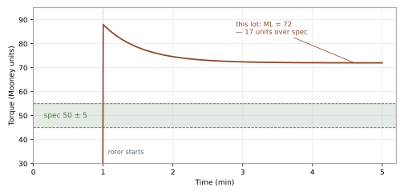
這批收還是不收？
產線反映：「昨天那批料特別難做，押出來尺寸一直跑。」品保翻進料檢驗紀錄——同牌號、ML 全部在規格內、跟平常沒兩樣。
現場說難做、數據說正常——哪裡出了問題？
資深師傅捏一把新到的膠，搖搖頭：「這批不一樣。」檢驗數據攤開來——合格。師傅說不上哪裡不對，數據也挑不出毛病。
摸出來的判斷和量出來的數字，誰說的算？
A new lot arrives, waiting to be mixed. The test comes back — ML 72 against a spec of 50±5. The warehouse is waiting; so is the line.
Accept it or reject it?
Production reports yesterday's lot was unusually hard to run — extruded dimensions kept drifting. QA pulls the inspection records — same grade, every ML within spec, nothing unusual.
The floor says it is hard to run; the data says it is normal — where is the problem?
A senior operator squeezes the new rubber and shakes his head: "This lot is different." The inspection data disagrees — it passed. He cannot say what is off, and the numbers show nothing wrong.
A judgment made by hand, a number made by machine — which one counts?
膠太硬會發生什麼事？
擠壓機推不動、模具填不滿——做出來的東西缺角、尺寸不對，直接報廢。
那太軟呢？
尺寸控制不住——膠撐不住自己的形狀，做什麼都不對。
為什麼同一種膠，不同批次的手感會不一樣？
因為原料本身就會變。橡膠在做成輪胎、密封圈之前，是一團又黏又有彈性的原料——分子量、支化、成分差一點，「軟硬手感」就差一截。所以工廠每天面對的問題是：這批膠好不好加工？
靠師傅的手感不行嗎？
手感當然有用，但它有兩個問題：沒辦法寫進規格書，也沒辦法拿去跟供應商對帳。你需要的是一個誰測、在哪測都一樣的數字。
有沒有辦法在進料前就先知道？
有——這就是木尼粘度計（Mooney viscometer）在做的事。它在 1930 年代由物理學家 Melvin Mooney 發明[1]，做法很直觀：把膠料塞進一個加熱的模腔，放一個圓盤狀的轉子（rotor）進去轉，量「要多少力才轉得動」。轉動越費力，代表膠越黏稠、越難加工。
為什麼一百年了還在用同一台機器？
因為它量測快速、結果穩定。進料檢驗、批次一致性確認、混煉膠的加工安全評估，都靠它當第一道關卡。[2]
木尼粘度計 = 用「轉動阻力」替橡膠的「難加工程度」打分數的機器。分數越高，膠越黏、越難加工。
需要一個數字、也有了打分的機器——那這個分數量的到底是什麼？
What happens if the rubber is too stiff?
Extruders can't push it and molds can't fill — parts come out short or out of spec.
And too soft?
Dimensions can't be controlled — the rubber can't hold its own shape.
Why does the same grade feel different from batch to batch?
Because the raw material itself varies. Before rubber becomes a tire or a seal, it is a sticky, elastic raw material — small differences in molecular weight, branching, or composition change the "feel". So the question on the factory floor every day is: is this batch easy to process?
Why not just trust an experienced hand?
Feel works, but it has two problems: it cannot be written into a spec sheet, and it cannot be taken to a supplier for comparison. What you need is a number that reads the same whoever measures it, wherever it is measured.
Can you know that before accepting the material?
Yes — that is what the Mooney viscometer does. Invented in the 1930s by physicist Melvin Mooney[1], the idea is intuitive: pack the rubber into a heated cavity, rotate a disk-shaped rotor inside it, and measure how much force it takes to turn. The harder it is to turn, the more viscous — and harder to process — the rubber is.
Why has the same machine survived a century?
Because the test is fast and repeatable. Incoming inspection, batch-to-batch consistency, and processing-safety assessment of compounds all rely on it as the first checkpoint.[2]
A Mooney viscometer scores how "hard to process" a rubber is by measuring rotational resistance. Higher number = more viscous = harder to process.
You need a number, and there is a machine that produces one — but what does that number actually measure?
「粘度（viscosity）」講的是流體抵抗流動的程度。濃稠的液體比水黏，所以倒得慢——它的粘度高。橡膠也是一種會流動的材料，只是慢得多、而且需要在加熱與加壓下才流得動。木尼粘度計量的就是「這團膠在規定溫度下，抵抗被轉子攪動的程度」。
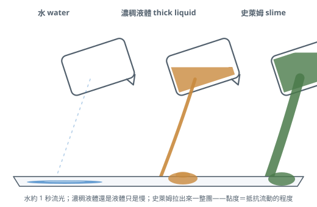
轉子在膠裡轉動時受到的阻力（扭矩，torque）會被換算成一個數字，單位叫「木尼單位（Mooney unit, MU）」。這是一個相對指標，不是物理學定義的真粘度。實務上只要記住：數字越大，膠越「黏」、越難加工。[3]
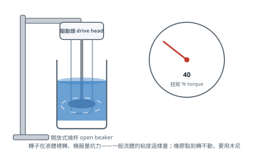
阻力會換算成數字了——那機器是怎麼把阻力量出來的？
Viscosity describes how much a fluid resists flowing. A thicker liquid is more viscous than water, so it pours slowly. Rubber also flows — just far more slowly, and only under heat and pressure. The Mooney viscometer measures how much the rubber resists being sheared by a rotor at a specified temperature.
The resistance (torque) the rotor feels is converted into a number expressed in Mooney units (MU). It is a relative index, not a true physical viscosity. For practical purposes: the higher the number, the more viscous and harder to process the rubber.[3]
Resistance becomes a number — so how does the machine actually measure that resistance?
木尼粘度計的核心部件：[3]
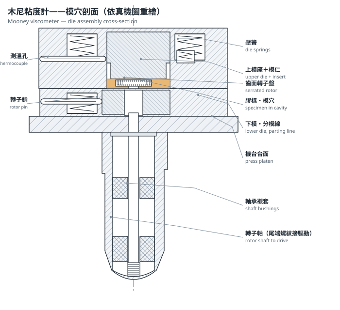
試片的一致性直接影響數據的可重複性。一般做法：[4]
測完之後，結果會寫成類似 ML(1+4)100°C = 50 這樣一串——把它當密碼來拆：[3]
所以「ML(1+4)100°C = 50」的白話是：用大轉子、在 100°C、預熱 1 分鐘後轉 4 分鐘，量到的阻力是 50 個木尼單位。
之所以要寫得這麼細，是因為換一個條件（轉子大小、時間、溫度），數字就會不一樣。只有寫法完全相同的兩個木尼值才能直接比較——這是判讀時最重要的規則。
機器怎麼量、數字怎麼寫都清楚了——但「難不難推」，是這台機器唯一能回答的問題嗎？
The core parts of a Mooney viscometer:[3]
Repeatability depends heavily on specimen consistency. Typical practice:[4]
After the test, the result is written as something like ML(1+4)100°C = 50 — read it like a code:[3]
So "ML(1+4)100°C = 50" means: with the large rotor at 100°C, after 1 minute of preheating and 4 minutes of rotation, the measured resistance is 50 Mooney units.
This notation is so specific because any change in rotor size, timing, or temperature changes the number. Only two Mooney values written in exactly the same notation are directly comparable — the single most important rule when reading results.
How the machine measures and how the number is written are clear — but is "how hard to push" the only question it can answer?
同一台機器能做三種測試，各回答一個不同的實務問題。[2][3][9]
| 測試 | 回答的問題 | 工廠用途 |
|---|---|---|
| 木尼粘度 Mooney viscosity |
這批膠好不好加工？ | 進料檢驗、批次一致性、押出/成型難易預估 |
| 木尼焦燒 Mooney scorch |
這批膠還剩多少安全加工時間？ | 含硫化劑混煉膠的儲存與加工安全評估，防止「提前硫化」（膠在機台裡就先硫化報廢） |
| 應力鬆弛 Stress relaxation |
這批膠的「彈性成分」多還是「黏性成分」多？ | 判斷押出膨脹、回彈等彈性行為；補粘度值看不到的部分 |
就是前面講過的標準測法：預熱後轉 4 分鐘讀值。曲線怎麼看：[5][8]
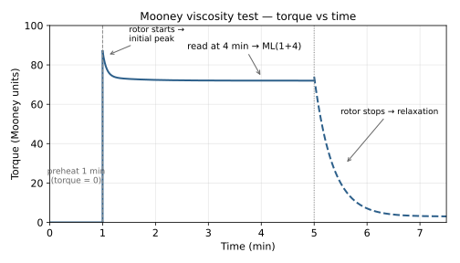
實務上什麼時候會用到這個數字？
新一批膠到貨，等著進混煉。規格給的驗收依據只有一個數字：ML(1+4)100°C = 50±5——實測卻是 72，超出上限。
這批到底能不能收？
木尼值是轉動阻力的相對指標，值越高膠越黏、越難推——超出上限表示這批照原定製程跑會吃力，直接收下來用，後面混煉、押出都會出問題。[3]接下來拿數據找供應商：先確認是量測條件差異還是膠本身的問題，再決定退貨或協議放行；放行的話要同步告訴產線「這批偏硬」——塑煉時間得拉長。進料時的一個數字，決定了後面整條動線怎麼調。
同牌號的膠想開第二來源，採購在問能不能換。同條件各測一次：舊供應商 48、新來源 65——同牌號差了 17 個單位。
新來源的膠能直接替換嗎？
同牌號為什麼會差這麼多？原料來源與聚合條件不同，分子量與支化就不同，「軟硬手感」自然不一樣。65 的那家進線要多花塑煉時間與能耗——這些成本得算進採購決策，不是只比單價。測值讓「好不好加工」變成可以量化、可以拿去談的東西。
早上進料檢驗，這批的值偏高，但仍在規格內，已收下來準備上線。
今天排產要注意什麼？
值高代表膠黏、難推動，塑煉不夠的話後面混煉、押出都會吃力，所以排產時多留一段塑煉時間。反過來值偏低，要留意的就換成尺寸控制與強度——膠太軟撐不住形狀。數字在進線之前先告訴你要準備什麼，而不是等廢品出來才回頭查原因。
進料檢驗每批都合格。但翻這幾個月的紀錄，發現數值一批一批慢慢往上爬。
都還在規格內——有沒有問題？
單批合格不代表沒事，趨勢在動表示上游有什麼正在改變：可能是原料端的變化，也可能是供應商製程在偏移。這時候拿趨勢資料找供應商談，在還沒超規格之前把問題攔下來，比等產線出問題再處理便宜得多。
含了硫化劑的膠，等於一直在「慢慢熟」——只是不知道什麼時候熟過頭。這個測試把膠放進高溫裡一直轉，看它幾分鐘開始熟：那個時間點，就是安全加工的底線。
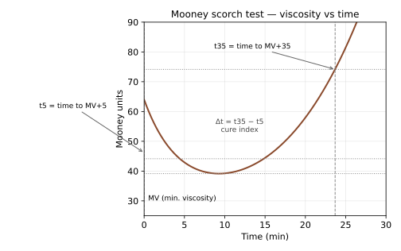
實務上什麼情況會用到？
一批含硫化劑的混煉膠在倉庫放了三週，現在要拿來生產。
放這麼久，膠料會不會有異常變化？
回測 t5，發現從入庫時的 18 分鐘縮到 12 分鐘。為什麼會縮短？含了硫化劑的膠在儲存期間會緩慢繼續反應，離提前硫化越來越近——安全加工時間正在流失。[3]所以對策是：優先出掉這批舊料、檢查儲存溫度；往後入庫標日期、定期回測 t5，把庫存膠的「剩餘壽命」變成看得見的數字。
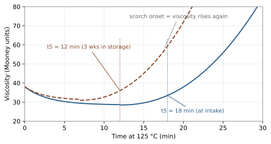
新配方準備上線，排產的加工流程估計要 15 分鐘——測出 t5 只有 8 分鐘。
來不來得及做完？
8 分鐘是什麼意思？膠在測試溫度下大約 8 分鐘就開始硫化——照原計畫跑，膠會在機台裡就先硫化報廢。要調的方向有幾個：降排膠溫度、硫化劑移到最後一段加、或改用遲效性促進劑。t5 在上線之前就告訴你這個配方來不來得及。
押出機裡清出一塊已經硫化的膠，產線停下來清料。
是不是焦燒造成的？
拿同批剩料一測，t5 只剩 6 分鐘，而事發當時機台停了 10 分鐘。為什麼停機會出事？膠在熱機台裡繼續受熱，停越久離 t5 越近——停 10 分鐘早已超過 6 分鐘的安全上限，膠就在機台裡硫化了。接下來把「停機超過幾分鐘就要清料」寫進作業程序，事故就變成一條可以執行的規則。
這批混煉膠今天上線，中間有換模、等料的空檔。
膠能在熱機台裡放多久？
t5 就是上限：排產時把最長等待時間壓在 t5 之內，任何空檔超過就先清料再說。
用手指捏一塊膠再放開——彈回來快的彈性強、彈得慢的偏黏。這個測試做的是同一件事，只是把場景搬進模腔裡。
轉子轉的時候，膠被轉子拖著走，在腔裡被拗成彎彎扭扭的形狀——膠頂回去的力，就是機器量到的扭矩。轉子突然停住，被拗開的膠還卡在腔裡。接下來只看一件事：膠還推不推轉子？
所以斜率差異的來源是「膠推擠轉子的力撐多久」：撐得久＝彈性成分多，變形被記住、出模口才回彈——押出膨脹的來源；撐不久＝黏性成分多，變形留不住、出模尺寸穩。
圖怎麼看（左圖）：
圖怎麼看（右圖）：把鬆弛段畫在 log–log 座標上會接近直線，斜率 a 就是鬆弛指數——越平越彈、越陡越黏。斜率量的是「膠對轉子的推擠力撐多久」：一直推著轉子的膠，應力散得慢（平）；很快不再推的膠，應力散得快（陡）。
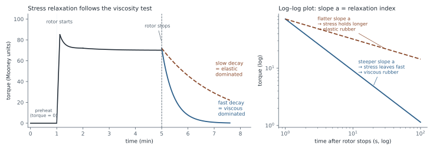
實務上什麼時候會用到？
兩個產地的天然膠 ML 差不多，做出來的產品回彈卻一直不一樣。
差在哪？
比鬆弛指數：產地 B 的膠衰減較慢、彈性明顯較強。為什麼同樣的 ML 彈性會不同？ML 只反映黏度這一面，分子結構（支化、凝膠含量）造成的彈性差異它看不到——這就是配方一直調不穩的原因。[5]開發階段用鬆弛指數篩原膠，比只盯 ML 多一層保障。
手上這個案子要做尺寸精度要求高的密封件。
選膠時該看什麼？
鬆弛快的膠膨脹小、尺寸好控制，但生膠強度可能較低、半成品拿取易變形；鬆弛慢的膠剛好相反。依產品需求取捨，「手感好不好」變成可以拿數據討論的決定。
三種測試、三個問題——那測出來的數字，怎麼判讀？
One instrument performs three tests, each answering a different practical question.[2][3][9]
| Test | Question it answers | Factory use |
|---|---|---|
| Mooney viscosity | Is this batch easy to process? | Incoming inspection, batch consistency, predicting extrusion/molding behavior |
| Mooney scorch | How much safe processing time remains? | Safety assessment of compounds containing curatives — preventing premature vulcanization (rubber curing inside the machine and scrapping the batch) |
| Stress relaxation | Is this rubber dominated by elastic or viscous behavior? | Predicting elastic behaviors like die swell and recovery; captures what the viscosity value alone cannot |
The standard method covered earlier: preheat, then read at 4 minutes of rotation. Reading the curve:[5][8]
Where does this number get used?
A new lot has arrived and is waiting to go into the mixer. The spec gives only one acceptance number: ML(1+4)100°C = 50±5 — the test comes back at 72, over the limit.
Can this lot be accepted?
The Mooney value is a relative index of turning resistance — the higher it is, the stiffer and harder to push the rubber, so a lot over the limit will struggle under the standard process.[3] Next: take the data to the supplier, confirm whether it is a test-condition difference or the rubber itself, then decide rejection or conditional release. If released, the line needs to know "this lot is stiff" — mastication time has to go up. One number at receiving sets the tone for everything downstream.
Purchasing wants to qualify a second source for the same grade. Both are tested under identical conditions: current supplier 48, new source 65 — same grade, 17 units apart.
Can the new source be dropped in as a direct replacement?
Why would the same grade differ that much? Different feedstock and polymerization conditions mean different molecular weight and branching — the "stiffness feel" naturally differs. The 65 rubber costs extra mastication time and energy on the line, which belongs in the purchasing calculation — not just the unit price. The number turns "easy to process" into something you can quantify and negotiate.
This morning's incoming lot tested high — still inside spec, accepted, and scheduled for the line.
What should production watch for today?
A high value means stiff, hard-to-push rubber: without extra mastication, downstream mixing and extrusion will struggle, so the schedule keeps an extra breakdown pass. If it reads low instead, the concern flips to dimensional control and strength — soft rubber cannot hold its shape. The number tells you what to prepare before the rubber hits the line, instead of tracing causes after scrap appears.
Every lot passes incoming inspection — but the records show values creeping up lot after lot.
Still inside spec — is that a problem?
A passing single lot doesn't mean nothing is changing; a moving trend means something upstream is shifting — a raw-material change or a drifting supplier process. Take the trend data to the supplier now: catching it before it goes out of spec is far cheaper than catching it on the production line.
A compound with curatives in it is "cooking" slowly all the time — the only question is when it overcooks. This test keeps the rubber turning at high temperature to see when the cooking starts: that point is the limit of safe processing time.
Where does this get used?
A curative-containing compound sat in the warehouse for three weeks and is now needed for production.
Could it have changed in that time?
Retest t5: it has dropped from 18 minutes at intake to 12. Why did it shorten? Once curatives are in, the compound keeps reacting slowly during storage — creeping closer to premature vulcanization, so the safe processing window is draining away.[3] The follow-up: run this old lot first and check storage temperature; from now on, date every lot and retest t5 periodically, so the "remaining life" of stored compound becomes a visible number.
A new formulation is about to go on the line; the planned processing takes 15 minutes — the measured t5 is only 8.
Can it be processed in time?
What does 8 minutes mean? At the test temperature the rubber starts curing after roughly 8 minutes — run as planned and it vulcanizes inside the machine. Options: lower the dump temperature, add curatives in the final stage, or switch to a delayed-action accelerator. t5 tells you whether the formulation can make it before it reaches production.
A chunk of already-cured rubber is cleaned out of the extruder; the line is down for cleaning.
Was it scorch?
Testing the remaining compound shows t5 of only 6 minutes, and the line had been stopped for 10. Why does a stop cause trouble? Rubber sitting in a hot machine keeps heating — every minute brings it closer to t5, and a 10-minute stop far exceeded the 6-minute margin. The follow-up: write "purge the compound if stopped beyond a set time" into the operating procedure, turning an accident into an executable rule.
Today's compound is going on the line, with material waits and die changes in between.
How long can it sit in the hot machine?
t5 is the upper limit: schedule the longest allowable wait inside it, and if any gap runs over, purge first.
Pinch a piece of rubber and let go — a quick spring-back means more elasticity, a slow one means a more viscous character. This test does the same thing, just moved inside the die cavity.
While the rotor turns, it drags the rubber around and twists it out of shape inside the cavity — the force the rubber pushes back with is the torque the instrument reads. When the rotor stops suddenly, the twisted rubber is still wedged in the cavity. Only one question matters now: does the rubber keep pressing on the rotor?
So the slope difference comes down to how long the rubber keeps pressing on the rotor: lasting pressure = more elastic content — the deformation is remembered and released at the die exit (the source of die swell); pressure that dies quickly = more viscous content — the deformation is not retained and the extrudate holds its size.
Reading the figure (left):
Reading the figure (right): plotted on log–log axes the decay is nearly a straight line — its slope a is the relaxation index: flatter = more elastic, steeper = more viscous. The slope measures how long the rubber keeps pressing on the rotor: rubber that keeps pressing sheds stress slowly (flat); rubber that quickly stops pressing sheds it fast (steep).
Where does this get used?
Two NR origins read nearly the same ML, yet the finished product keeps rebounding differently.
Where is the difference?
Compare relaxation indices: origin B decays more slowly and is markedly more elastic. Why can equal ML hide different elasticity? ML only reflects the viscosity side — elastic differences from molecular structure (branching, gel content) are invisible to it, which is why the formulation never stabilized.[5] Screening raw rubber by relaxation index during development adds a layer of assurance that ML alone misses.
The job at hand is a seal with tight dimensional tolerance.
What should you look at when choosing the rubber?
Fast-relaxing rubber swells less and holds size better, but may have lower green strength and deform when handled; slow-relaxing rubber is the opposite. Choose per product needs — "how it feels" becomes a decision made with data.
Three tests, three questions — now how do you read the numbers they produce?
| 木尼值 | 代表 | 加工上的含義 |
|---|---|---|
| 偏低（如 < 30） | 膠很軟、易流動 | 好加工但要注意尺寸控制與強度；可能是低分子量或配方軟化劑多 |
| 中間（約 40–70） | 一般加工範圍 | 多數混煉膠落在這裡 |
| 偏高（如 > 80） | 膠很黏、難推動 | 押出/成型吃力、生熱多；可能是高分子量或填充高 |
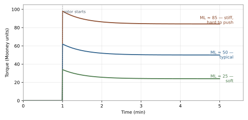
判讀規則都有了——但為什麼同 ML 的兩批膠，做起來手感還是不同？
| Mooney value | Meaning | Processing implication |
|---|---|---|
| Low (e.g. < 30) | Soft, flows easily | Easy to process but watch dimensional control and strength; may indicate low molecular weight or high plasticizer content |
| Mid-range (~40–70) | Typical processing range | Most compounds fall here |
| High (e.g. > 80) | Very viscous, hard to push | Extrusion/molding is strenuous with more heat buildup; may indicate high molecular weight or heavy filler loading |
The reading rules are in place — so why do two batches with the same ML still process differently?
兩批膠 ML 同為 50、進料檢驗都合格。押出時 A 批正常，B 批卻膨脹到尺寸失控。
同樣的數字，為什麼做起來不一樣？
補做鬆弛測試：A 衰減快、B 衰減慢。衰減快慢代表什麼？扭矩掉得快表示膠以黏性為主——形狀流掉就流掉了；掉得慢表示彈性成分多——膠記得住形狀、押出後會回彈。[5]B 批就是彈性太強才膨脹失控。接下來的動線：B 批調口型間隙或降押速；並把鬆弛指數加進這類產品的進料檢驗——光靠 ML 擋不住這種問題。
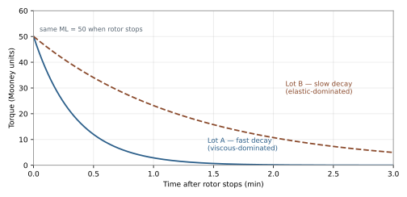
粘度值只說「膠有多黏」；應力鬆弛說的是「膠的彈性有多強」。橡膠同時有黏性與彈性，兩批木尼值相同的膠，彈性成分可能差很多——上面 B 批踩中的正是這個盲區。[3]
實務用途：
數值怎麼讀（冪次定律 M = k·ta）：
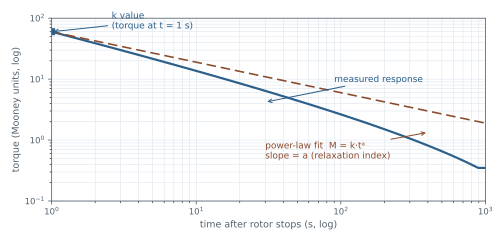
同一段粘度測試曲線其實有三組資訊，但多數報表只摘平穩值：
實務上，進料檢驗若只收 ML 一個數字，等於丟掉曲線前半段的資訊；跟供應商或實驗室要完整曲線（峰值＋鬆弛數據），同一筆測試能看到更多。
焦燒測試只能抓硫化的「起跑點」（incipient cure）。膠硫化變硬後試片會在轉子下打滑（slippage），扭矩不再反映材料變化——所以木尼儀追蹤不了完整硫化過程。要看完整硫化曲線（最低粘度、焦燒時間、正硫化點、過硫）要用無轉子流變儀（MDR）。[3]
| 木尼粘度計 | 無轉子流變儀（MDR） | |
|---|---|---|
| 量什麼 | 加工性（粘度）、焦燒起點、彈性成分 | 完整硫化過程：焦燒、硫化速率、正硫化、過硫 |
| 試片 | 含或不含硫化劑皆可 | 通常含硫化劑 |
| 角色 | 進料與混煉膠的「加工性守門員」 | 硫化特性的「全程記錄員」 |
簡單說：木尼儀管「硫化之前好不好做」，流變儀管「硫化過程怎麼走」。兩台互補，不互替。[2][3]
看不到的那一面清楚了——那這台機器做不到什麼呢？
Two lots both passed incoming at ML 50 — yet on extrusion, lot A behaves while lot B swells beyond dimensional limits.
Same number, why does it process differently?
A relaxation test shows A decays fast and B slowly. What does decay speed mean? Fast decay means the rubber is viscous-dominated — shape flows away and stays gone; slow decay means more elastic content — the rubber remembers its shape and springs back.[5] Lot B's excess elasticity is exactly why it swells out of control. The follow-up: adjust the die gap or line speed for B, and add the relaxation index to incoming inspection for this product family — ML alone cannot catch this.
Viscosity says how "thick" the rubber is; relaxation says how elastic it is. Rubber is both viscous and elastic, and two batches with the same Mooney value can differ greatly in elastic content — the blind spot lot B just ran into.[3]
Practical uses:
Reading the numbers (power law M = k·ta):
One viscosity-test curve actually carries three pieces of information, yet most reports only quote the plateau:
In practice, an incoming inspection that only records ML discards the first half of the curve. Asking the supplier or lab for the full curve (peak + relaxation data) extracts more from the same test.
The scorch test only captures the onset of cure (incipient cure). Once the rubber stiffens, the specimen slips under the rotor and torque no longer reflects the material — so the Mooney viscometer cannot track complete vulcanization. For the full cure curve (minimum viscosity, scorch time, optimum cure, reversion), a rotorless rheometer (MDR) is required.[3]
| Mooney viscometer | Rotorless rheometer (MDR) | |
|---|---|---|
| Measures | Processability (viscosity), scorch onset, elastic component | The full cure process: scorch, cure rate, optimum cure, reversion |
| Specimen | With or without curatives | Usually with curatives |
| Role | Gatekeeper of processability for raw rubber and compounds | Full-process recorder of vulcanization |
In short: the Mooney covers "how easy it is to process before curing"; the rheometer covers "how curing proceeds". They complement rather than replace each other.[2][3]
The blind side is clear — so what can't the instrument do?
能做的事一路講下來——它的邊界在哪裡？
ML 合格，到底能保證什麼、不能保證什麼？
哪些問題換個條件就能解決，哪些是這台機器天生到不了的地方？
前面講的都是「它能做什麼」。這裡反過來，把 ASTM D1646 條文與文獻裡寫明的邊界一次收齊——這些不是操作不當才踩到的坑，而是儀器在設計上就到不了的地方。看清楚了，才知道什麼問題該拿它問、什麼問題該換工具。
| 它做不到什麼 | 為什麼（機制） | 拿什麼補 |
|---|---|---|
| 給出「真粘度」或流變參數 | 橡膠是非牛頓流體，量到的是一段剪切範圍內的平均扭矩，結果為此機型特有（D1646 NOTE 1）——不能代進流動公式當材料常數 | 毛細管／旋轉流變儀[3] |
| 從 ML 直接讀分子量或結構 | 分子量、支化、凝膠、非橡膠成分混在同一個數字裡，無簡單對應（§5.1）；分子量高到一定程度讀值還會鈍化——IIR 在 100°C 約停在 80 MU、再高反而下降 | SEC／GPC 分子量分析；NR 可用變速木尼低速端[3][10] |
| 用 ML 單值分開彈性／黏性 | ML 是彈黏混合量——前面同 ML 兩批膠裡的 B 批就踩中這個盲區 | 鬆弛測試：指數 a、(a+1)、Maxwell tm[3][5][11] |
| 追蹤完整硫化曲線 | 試片硫化變硬後在轉子下打滑，扭矩不再反映材料（§5.3）——只能抓焦燒起點 | 無轉子流變儀（MDR）[3] |
| 保證標準 2 rpm 一定在正常流動區 | NR 在 2 rpm 以下即可能進入熔體破裂支線（材料層上限）；打滑則是儀器層上限，換小轉子也不保證能解（§10.1） | 變速木尼低速量測[6][10] |
| 大小轉子讀值互換 | 兩種轉子的對應關係隨膠種與條件變動，標準明文禁止換算（§11.1.3.1） | 固定寫法、分開報告[3] |
| 跨製備方式、跨標準直接比數字 | 輥壓與否（massed／unmassed）讀值可差；ISO 289 不設輥壓製備、ASTM 允許；兩種模面型式也可能給出不同結果（NOTE 2、§1.5） | 比對前先對齊條件寫法[3][7] |
| 用單一固定條件模擬真實加工 | 溫度、轉速、模腔幾何全部固定——它是對照指標，不是製程模擬；真實押出／射出的剪切率高出好幾個量級 | 製程側線驗證、高剪切流變工具[3] |
| 告訴你批次為什麼不同 | 一個數字只指出「有差異」，不說差異的成因——可能是分子量、凝膠、支化、混煉或老化中的任何一種 | 鬆弛曲線＋結構分析（SEC、凝膠含量）[5][10][11] |
| 用 ML 合格保證成品性能 | 它量的是「未硫化膠的加工性」；強度、耐久、硫化後物性不在量測範圍 | 硫化後物性測試（拉力、硬度等） |
那它到底是什麼？一台在固定條件下做比較的儀器：同類膠、同寫法、同條件下比批次、看趨勢、守進料——這是它的主場。表裡的邊界不是它的缺點，是它的工作範圍：越界的需求不是它壞，是該換工具了。[3]
能做的、做不到的邊界都收齊了——那開頭的三個問題呢？
All this on what it can do — where are its limits?
What does a passing ML actually guarantee — and what does it not?
Which problems can be fixed by changing test conditions, and which are simply beyond this instrument?
Everything so far was about what it can do. Here we turn it around and collect the boundaries written into ASTM D1646 and the literature — these are not pitfalls of poor execution, but places the instrument was never designed to reach. Knowing them tells you which questions to bring to it and which need a different tool.
| What it can't do | Why (mechanism) | What to use instead |
|---|---|---|
| Give a "true viscosity" or rheological parameters | Rubber is non-Newtonian; the reading is a torque averaged over a range of shear rates, unique to this instrument (D1646 NOTE 1) — not a material constant for flow equations | Capillary or rotational rheometry[3] |
| Read molecular weight or structure from ML | Molecular weight, branching, gel, and non-rubber constituents fold into one number with no simple relation (§5.1); readings even blunt at very high MW — IIR plateaus near 80 MU at 100°C and can drop beyond | SEC/GPC analysis; for NR, the low-speed end of variable-speed Mooney[3][10] |
| Separate elastic from viscous using the ML value alone | ML is a composite — the lot-B case with the same ML ran straight into this blind spot | Relaxation test: exponent a, (a+1), Maxwell tm[3][5][11] |
| Track the full cure curve | Once the specimen stiffens it slips under the rotor and torque stops reflecting the material (§5.3) — only the scorch onset is readable | Rotorless rheometer (MDR)[3] |
| Guarantee the standard 2 rpm is in the proper-flow regime | NR can enter the melt-fracture branch below 2 rpm (a material-level ceiling); slippage is an instrument-level ceiling, and switching to the small rotor does not always cure it (§10.1) | Variable-speed Mooney at low rotor speeds[6][10] |
| Convert between large- and small-rotor readings | The rotor relationship varies with rubber type and conditions — the standard explicitly forbids conversion (§11.1.3.1) | Fixed notation; report each rotor separately[3] |
| Compare numbers across preparations or standards | Massed vs unmassed specimens can differ; ISO 289 provides no mill massing while ASTM allows it; the two die-surface types may also give different results (NOTE 2, §1.5) | Align conditions and notation before comparing[3][7] |
| Simulate real processing from one fixed condition | Temperature, speed, and cavity geometry are all fixed — it is a comparative index, not a process simulation; real extrusion/injection shear rates are orders of magnitude higher | Line-side process validation, high-shear rheometry[3] |
| Tell you why a batch differs | One number flags a difference but not its cause — molecular weight, gel, branching, mixing history, or aging could each produce it | Relaxation curve + structural analysis (SEC, gel content)[5][10][11] |
| Guarantee finished-product performance from a passing ML | It measures the processability of unvulcanized rubber; strength, durability, and post-cure properties are outside its scope | Post-cure physical tests (tensile, hardness, etc.) |
So what is it, exactly? An instrument for comparisons under fixed conditions: same rubber family, same notation, same conditions — ranking batches, tracking trends, guarding incoming material. That is its home ground. The limits in the table are not flaws; they are its scope. A need beyond the boundary is not a broken instrument — it is the wrong tool.[3]
Capabilities and limits are now both on the table — so what about the three questions from the start?
新一批膠到貨，等著進混煉。進料檢驗打下去——ML 測出 72，規格寫的是 50±5。倉庫在等、產線也在等。
這批收還是不收？
先別收，也先別退。先核對量測條件——轉子、溫度、時間、試片製備，跟規格寫法一致嗎？條件一致、值仍超規，就退貨或協議放行；放行的話同步告訴產線「這批偏硬」，塑煉時間得拉長，後面混煉、押出才不會出問題。
產線反映：「昨天那批料特別難做，押出來尺寸一直跑。」品保翻進料檢驗紀錄——同牌號、ML 全部在規格內、跟平常沒兩樣。
現場說難做、數據說正常——哪裡出了問題？
都沒錯——是數字量錯了面向。ML 只量「難不難推」，押出尺寸漂移看的是彈性記憶，ML 看不到。補做鬆弛測試：衰減慢的批彈性強、出模膨脹大，調口型間隙或降押速；並把鬆弛指數加進這類產品的進料檢驗——光靠 ML 擋不住這種問題。
資深師傅捏一把新到的膠，搖搖頭：「這批不一樣。」檢驗數據攤開來——合格。師傅說不上哪裡不對，數據也挑不出毛病。
摸出來的判斷和量出來的數字，誰說的算？
都說的算——只是量的面向不同。師傅摸到的多半是彈性那一面：抱不抱得住、回不回得來；ML 量到的是黏性那一面：好不好推。兩個都真實，只是一直沒有共同的單位——鬆弛指數，就是把那個手感變成數字的方法。
A new lot arrives, waiting to be mixed. The test comes back — ML 72 against a spec of 50±5. The warehouse is waiting; so is the line.
Accept it or reject it?
Don't accept it yet — and don't reject it yet either. First check the test conditions — rotor, temperature, timing, specimen preparation — against the spec notation. If the conditions match and the value is still over the limit, reject it or negotiate a conditional release. If released, tell the line "this lot is stiff" — mastication time goes up so downstream mixing and extrusion stay out of trouble.
Production reports yesterday's lot was unusually hard to run — extruded dimensions kept drifting. QA pulls the inspection records — same grade, every ML within spec, nothing unusual.
The floor says it is hard to run; the data says it is normal — where is the problem?
Both are right — the number was measuring the wrong dimension. ML only captures "how hard to push"; dimensional drift on extrusion is driven by elastic memory, which ML cannot see. Run a relaxation test: a slow-decaying lot is more elastic and swells more out of the die — adjust the die gap or line speed, and add the relaxation index to incoming inspection for this product family. ML alone cannot catch this.
A senior operator squeezes the new rubber and shakes his head: "This lot is different." The inspection data disagrees — it passed. He cannot say what is off, and the numbers show nothing wrong.
A judgment made by hand, a number made by machine — which one counts?
Both count — they are measuring different dimensions. What the operator feels is largely the elastic side: whether the band holds together, how fast it springs back. What ML measures is the viscous side: how hard it is to push. Both are real — they just never shared a unit. The relaxation index is what turns that feel into a number.
| 中文 | English | 說明 |
|---|---|---|
| 木尼粘度計 | Mooney viscometer | 亦作「門尼粘度計」；以發明者 Melvin Mooney 命名 |
| 木尼值 / 木尼單位 | Mooney viscosity / Mooney unit (MU) | 相對指標，非真粘度 |
| 轉子 | rotor | 大轉子 L（38.10 mm）/ 小轉子 S（30.48 mm） |
| 模腔 / 模具 | die cavity / dies | 容納膠料的密閉腔體 |
| 扭矩 | torque | 轉動阻力，木尼值的原始量測量 |
| 焦燒 / 提前硫化 | scorch / pre-vulcanization | 膠料在加工中提前開始硫化 |
| 應力鬆弛 | stress relaxation | 停止變形後應力衰減的速率 |
| 生膠強度 | green strength | 未硫化膠的強度，與初期峰值相關 |
| 非牛頓流體 | non-Newtonian fluid | 粘度隨剪切速率改變的流體 |
| 觸變性 | thixotropy | 剪切越久粘度越低的性質 |
| 熔體破裂 | melt fracture | 超過臨界應力時材料內部撕裂而非流動 |
| 凝膠含量 | gel content | 膠中已交聯成網狀的部分 |
| 混煉膠 | compound | 已混入配方成分的膠料 |
| 無轉子流變儀 | MDR (moving die rheometer) | 量完整硫化曲線的儀器 |
A：看膠種與測試條件。一般混煉膠多在 40–70 之間，但不能跨膠種、跨條件直接比。
A：可能原因包括膠料老化（NR 老化會使木尼值上升[6]）、試片製備差異、機台狀況（轉子磨損會影響結果[3]）。先確認測試條件與試片製備一致再判斷。
A：不是。木尼值只管加工性；產品強度、耐久等要看硫化後物性測試（拉力、硬度等）。
A：先核對雙方的測試條件寫法是否完全一致（轉子/溫度/時間）、試片製備方式、機台校正狀態，再談數據差異。跨機台比對是合理的第一步。
A：要看「加工」指哪一段。押出成型時是的——衰減快的膠在模內就把應力散掉，出模膨脹小、尺寸穩。但開鏈機正好相反：包輥要求膠帶連續、不裂不垂，靠的是生膠強度與內聚力（彈性那一面）——黏性太強、彈性不足的膠反而容易散帶、黏輥、垂料。天然膠開鏈手感好，正因為它偏彈性主導。所以「黏」不等於「好加工」——押出有利、開鏈未必；預判包輥性要看初期峰值（Mooney peak），不是只看 ML。
| 中文 | English | Note |
|---|---|---|
| 木尼粘度計 | Mooney viscometer | Also written 門尼粘度計; named after inventor Melvin Mooney |
| 木尼值 / 木尼單位 | Mooney viscosity / Mooney unit (MU) | A relative index, not a true viscosity |
| 轉子 | rotor | Large L (38.10 mm) / small S (30.48 mm) |
| 模腔 / 模具 | die cavity / dies | Sealed chamber holding the specimen |
| 扭矩 | torque | Rotational resistance; the raw measured quantity |
| 焦燒 / 提前硫化 | scorch / pre-vulcanization | Premature onset of curing during processing |
| 應力鬆弛 | stress relaxation | Rate of stress decay after deformation stops |
| 生膠強度 | green strength | Strength of uncured rubber; related to the initial peak |
| 非牛頓流體 | non-Newtonian fluid | Fluid whose viscosity varies with shear rate |
| 觸變性 | thixotropy | Property of viscosity dropping under sustained shear |
| 熔體破裂 | melt fracture | Internal tearing instead of flow beyond a critical stress |
| 凝膠含量 | gel content | The already-crosslinked fraction of the rubber |
| 混煉膠 | compound | Rubber already mixed with formulation ingredients |
| 無轉子流變儀 | MDR (moving die rheometer) | Instrument for full vulcanization curves |
A: Depends on the rubber and the test conditions. Most compounds fall between 40–70, but values are not comparable across rubber types or test conditions.
A: Possible causes include rubber aging (aging raises NR's Mooney value[6]), specimen preparation differences, and instrument condition (rotor wear affects results[3]). Verify identical test conditions and specimen prep before judging the data.
A: Not necessarily. Mooney only covers processability; product strength and durability require post-cure physical tests (tensile, hardness, etc.).
A: First verify both sides used identical notation (rotor/temperature/time), specimen preparation, and calibration status before comparing numbers. Cross-machine comparison is a reasonable first step.
A: Depends which step "processing" means. For extrusion, yes — a fast-relaxing rubber sheds stress inside the die, so die swell stays small and dimensions hold. On an open mill it is the opposite: banding on the rolls needs green strength and cohesion (the elastic side), so an overly viscous rubber tends to crumble, stick, or sag. Natural rubber mills beautifully precisely because it is elastic-dominated. "Viscous" does not equal "easy to process" — good for extrusion, not necessarily for milling. Mill banding is better predicted by the initial Mooney peak than by ML alone.
前面一路給的是「怎麼讀數字」——這一區收的是「這些讀法從哪裡來、還能走到哪裡」。以下四份是各自完整的專題文件：每份延伸本文的一段、對應一篇關鍵文獻，有獨立的標題、前言、數據、圖表與邊界討論，任何一份都可以單獨從頭讀完。文獻引用走本區自己的延伸文獻表（[E1]–[E6]，收在區塊最後），與主文文獻分開編號；每份專題也各自有獨立的 PDF。
| 專題 | 延伸自本文 | 回答的核心問題 | 關鍵文獻 |
|---|---|---|---|
| 彈性指數 (a+1) | 停轉之後的鬆弛曲線 | 鬆弛指數 a 是負數又反向——(a+1) 這個彈性讀法是怎麼來的？ | Maláč 2011 [E1] |
| 熔體破裂 | 三種測試・能力邊界清單 | 標準規定 2 rpm——天然膠在這個轉速下量到的還是粘度嗎？ | Cantaloube & Cocard 2004 [E2] |
| 變速木尼（MVS） | 能力邊界清單（固定條件之限） | 換不同轉速量，各段讀值分別對應分子結構的哪一部分？ | Kim et al. 2010 [E3] |
| 鬆弛模型比較 | 冪次定律擬合段 | 冪次定律只是四個模型之一——換個模型，鬆弛曲線會說出什麼？ | Ehabe et al. 2005 [E4] |
建議讀法：品保與進料檢驗先讀〈彈性指數〉與〈熔體破裂〉——一個講指標怎麼讀出彈性，一個講標準量測在哪裡會失真；做配方與製程的加讀〈變速木尼〉——同規格膠的結構差異用雙點量測才攔得到；做研究或數據分析的看〈鬆弛模型比較〉——模型選擇決定鬆弛曲線能挖到多深。四份彼此有交叉引用，但順序不拘。
The main text covered how to read the numbers — this section collects where those readings come from and how much further they go. Below are four complete topic documents: each extends one passage of the main text, is built on one key paper, and carries its own title, introduction, data, figures, and boundary discussion — any one of them reads standalone from beginning to end. Citations use this section's own reference list ([E1]–[E6], collected at the end), numbered independently of the main text; each topic also ships as its own PDF.
| Topic | Extends | Core question | Key paper |
|---|---|---|---|
| Elasticity index (a+1) | the relaxation-curve section | Exponent a is negative and reads backwards — where does the elastic reading (a+1) come from? | Maláč 2011 [E1] |
| Melt fracture | the three tests · the limits list | The standard says 2 rpm — is the NR reading at that speed still viscosity? | Cantaloube & Cocard 2004 [E2] |
| Variable-speed Mooney (MVS) | the limits list (fixed-condition entry) | Measured at different speeds, which part of the molecular structure does each reading see? | Kim et al. 2010 [E3] |
| Relaxation-model comparison | the power-law fitting section | The power law is only one of four models — what does the curve say under another? | Ehabe et al. 2005 [E4] |
Suggested paths: for QA and incoming inspection, start with the elasticity index and melt fracture — one reads elasticity out of the index, the other shows where the standard measurement distorts; for compounding and processing, add variable-speed Mooney — structural differences inside spec are only caught by two-point measurement; for research and data analysis, read the model comparison — the model choice sets how deep the relaxation curve can be mined. The four cross-reference each other, but any order works.
Elasticity indexMelt fractureVariable speedModel comparisonReferences
鬆弛指數 a 量出來一直是負數——拿負數當日常指標，哪裡不好用？
把 a 加 1 變成 (a+1)，是為了讓數字好看，還是真的有物理意義？
k 跟 a 都是同一條曲線擬合出來的——為什麼 k 不能當彈性指標？
這篇要解決的問題很實務：ML 相同的兩批天然膠，進了混煉或押出仍可能表現不同——因為「好不好加工」除了黏的那一半，還有彈的那一半，而 ML 只說了前一半。木尼測試跑完，機器吐出的不只是一個 ML——還有初始峰值扭矩、整條鬆弛曲線。這些數據裡哪些是獨立情報、哪些只是換個方式把粘度再說一遍？Maláč 用文獻中量測的 18 個天然膠品級（NAT 10 系列、SMR L 等）逐一檢查：每個品級有 ML(1+4)100°C 與初始峰值扭矩，鬆弛段照 ASTM 框架用冪次定律 M = k·ta 擬合取 k 與 a，各品級擬合相關係數約 0.998–0.999（原文 Table 1）。[E1]
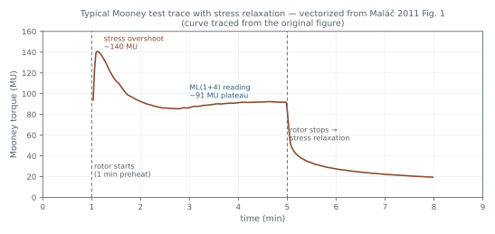
先排除 k。k 是「轉子停後第 1 秒的扭矩」，聽起來像個強度指標——但把 18 個品級的 k 對各自的 ML 作圖，幾乎落在一條直線上：k = 0.9312·ML − 15.53，R² = 0.9821（原文 Fig. 6）。k 帶的資訊跟粘度幾乎完全重疊，拿它當彈性指標是誤用，它只是用鬆弛段把粘度再說一遍。[E1]
a 帶的才是獨立資訊。同樣作圖，a 對 ML 卻是散開的：R² 只有 0.2931（原文 Fig. 8）——a 跟粘度基本無關，它帶的正是 ML 看不到的那一面。18 個品級的實測 a 全部是負值，落在約 −0.20 到 −0.38 之間。問題在讀法：a 越負代表衰減越快、黏性越強——「越負越不彈」是反向又帶負號的讀法，當日常判定指標很彆扭。[E1]
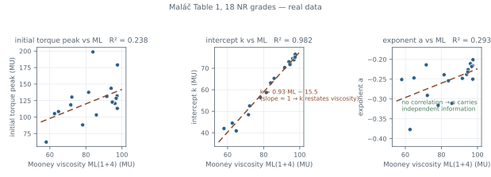
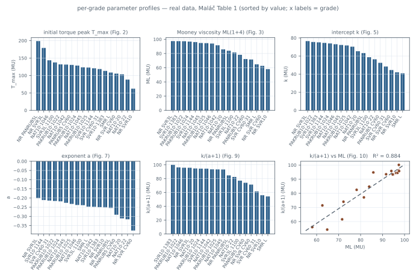
Maláč 的處理是把問題從扭矩面搬到能量面。轉子轉動時功率 P = ω·M、單位時間耗能 dE = P·dt；轉子一停，黏性貢獻的扭矩立刻消失，剩下來自彈性、隨時間衰減的部分。他假設彈性儲能的釋放速率正比於當下扭矩：dEs ~ M·dt = k·ta·dt，兩邊積分得 Es ~ k/(a+1)·t(a+1)——儲能項上的指數是 (a+1)，不是 a。這就是 (a+1) 的由來：不是為了把負數弄正，而是「彈性儲能隨時間的保持率」的指數（推導見原文 Eq. 8）。[E1]
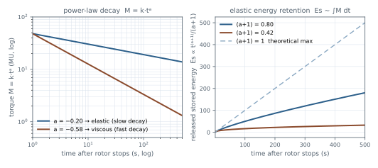
有意思的一點：(a+1) 這個結構本來就在 ASTM 裡。D1646 §12.3.3 算鬆弛曲線下面積的公式 A = k/(a+1)·[tf(a+1) − to(a+1)]（Eq 4）就是同一個積分，報告項也把 a、k、相關係數 r 與面積 A 都列入（§13.1.3）——但 ASTM 只把它當計算面積的中間項；把 (a+1) 單獨取出來命名為「木尼彈性」（Mooney elasticity）當獨立指標，是 Maláč 的詮釋。標準 NOTE 11 的範例正好可以套：k = 48.0、a = −0.5805，對應 (a+1) ≈ 0.42——偏黏的一端。[E5][E1]
| a | (a+1) | 讀法 |
|---|---|---|
| −0.20 | 0.80 | 18 品級實測最彈的一端 |
| −0.38 | 0.62 | 實測最黏的一端 |
| −0.58 | 0.42 | ASTM NOTE 11 範例值 |
| 0（假想） | 1 | 理論上限：儲能完全不衰減 |
讀法因而直覺：(a+1) 恆為正值、越高越彈，18 個品級實測落在約 0.62–0.80——都在中上段，符合天然膠彈性偏強的常識（原文 Fig. 11）。附帶產物是 k/(a+1)：黏性耗能對彈性儲能的比值，角色類似動態力學測試裡的損耗因子 tan δ——Maláč 自己註明這只是候選對應、尚非已證實的等同。[E1]
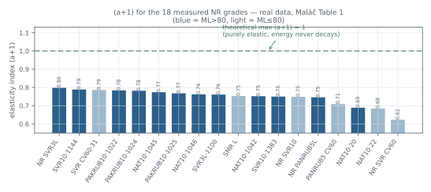
| 品級 | 初始扭矩峰 | ML | a | k | (a+1) |
|---|---|---|---|---|---|
| SVR 10, 1144 | 120.7 | 96.1 | −0.211 | 74.5 | 0.79 |
| NAT 10, 1045 | 123.4 | 94.8 | −0.226 | 72.2 | 0.77 |
| NAT 10, 1042 | 131.3 | 91.6 | −0.248 | 70.3 | 0.75 |
| NAT 10, 1046 | 143.6 | 94.0 | −0.238 | 73.0 | 0.76 |
| SMR L | 108.4 | 64.8 | −0.247 | 40.9 | 0.75 |
| PAKRUB 10, 1022 | 132.0 | 97.3 | −0.216 | 75.5 | 0.78 |
| PAKRUB 10, 1025 | 122.7 | 94.6 | −0.232 | 71.7 | 0.77 |
| PAKRUB 10, 1024 | 128.5 | 96.8 | −0.218 | 73.9 | 0.78 |
| NR SVR 10 | 62.2 | 58.0 | −0.251 | 42.0 | 0.75 |
| NR SVR 3L | 179.0 | 97.5 | −0.201 | 76.5 | 0.80 |
| NR PANRUB 5L | 198.7 | 83.9 | −0.254 | 63.2 | 0.75 |
| NR SVR CV 60 | 105.3 | 62.6 | −0.377 | 44.5 | 0.62 |
| PANRUB 5 CV 60 | 130.3 | 72.2 | −0.291 | 52.5 | 0.71 |
| SVR 10, 1383 | 113.2 | 97.4 | −0.250 | 75.1 | 0.75 |
| NAT 10, 20 | 103.3 | 85.8 | −0.311 | 65.3 | 0.69 |
| NAT 10, 22 | 88.2 | 78.2 | −0.316 | 56.4 | 0.68 |
| SVR 3L, 1100 | 137.5 | 81.5 | −0.239 | 58.7 | 0.76 |
| SVR CV 60, 31 | 118.5 | 71.6 | −0.214 | 48.4 | 0.79 |
原文 Table 1 原值（扭矩單位 MU；各列冪次擬合相關係數 R ≈ −0.998~−0.999）；(a+1) 欄為依 a 值計算。[E1]
邊界也要說清楚：(a+1) 建立在「儲能釋放率 ∝ 扭矩」這個經驗假設上，且只在天然膠品級上驗證；外推到合成膠或配方膠需要各自重新驗證。另外〈鬆弛模型比較〉一篇會看到，冪次定律在 Ehabe 的模型比較裡擬合度排倒數——但那是「曲線擬合品質」的問題；(a+1) 作為單一、跨廠可比的指標，在 ASTM 框架內仍然成立。兩件事不衝突：要擬合得漂亮，換模型；要一指標比對批次，(a+1) 的讀法依然實用。[E1][E4]
本篇文獻：Maláč 2011 [E1]——原文 Fig. 1–11 與 Table 1 全數收錄於本篇（Fig. 1 為數位化描取的忠實重繪；Fig. 2/3/5/7/9/10 見六格圖；Fig. 4/6/8 見三幅散點；Fig. 11 見排序長條圖；推導見 Eq. 8）；ASTM 面積公式與報告項見 D1646 §12.3.3、§13.1.3 [E5]。
—— 本篇完 ↑ 回到深入專案討論導讀
The measured relaxation exponent a is always negative — what goes wrong when a routine index is a negative number?
Does adding 1 to get (a+1) just make the number prettier, or does it carry physical meaning?
k and a come from the same fitted curve — why can't k serve as the elasticity index?
The problem this paper solves is practical: two NR batches with the same ML can still behave differently in mixing or extrusion — "processability" has a viscous half and an elastic half, and ML only reports the first. A finished Mooney run yields more than one ML — there is the initial torque peak and the whole relaxation curve. Which of these carry independent information, and which merely restate viscosity? Maláč checked parameter by parameter on 18 raw natural rubber grades from the literature (NAT 10 series, SMR L, etc.): each grade has ML(1+4)100°C and the initial torque peak, and the relaxation portion is fitted per the ASTM framework by the power law M = k·ta, giving k and a with correlation coefficients around 0.998–0.999 (the paper's Table 1).[E1]
Rule out k first. k is "the torque 1 second after the rotor stops" — it sounds like a strength index. But plotting the 18 grades' k against their ML lands almost on one line: k = 0.9312·ML − 15.53, R² = 0.9821 (Fig. 6). What k carries overlaps almost completely with viscosity — using it as an elasticity index is a misuse; it just restates viscosity from the relaxation segment.[E1]
a carries the independent information. The same plot for a is scattered: R² only 0.2931 (Fig. 8) — a is essentially uncorrelated with viscosity, carrying exactly the side ML cannot see. The measured a values are all negative, roughly −0.20 to −0.38. The problem is the reading direction: the more negative a is, the faster the decay and the more viscous the rubber — "more negative means less elastic" is an inverted, signed reading, awkward as a routine index.[E1]
Maláč's move was to shift the question from torque to energy. While the rotor turns, power P = ω·M and energy per unit time dE = P·dt; the instant the rotor stops, the viscous part of torque vanishes and what remains is the elastic part, decaying over time. He assumed the release rate of elastically stored energy is proportional to the torque itself: dEs ~ M·dt = k·ta·dt, which integrates to Es ~ k/(a+1)·t(a+1) — the exponent on the stored-energy term is (a+1), not a. That is the origin of (a+1): not a cosmetic fix for a negative number, but the exponent of how much elastic energy the material retains over time (the paper's Eq. 8).[E1]
An interesting point: the (a+1) structure was already inside ASTM. D1646 §12.3.3 computes the area under the relaxation curve as A = k/(a+1)·[tf(a+1) − to(a+1)] (Eq 4) — the same integral — and the report items list a, k, r, and A (§13.1.3). But ASTM treats it only as an intermediate term for area; pulling (a+1) out as a standalone "Mooney elasticity" index is Maláč's interpretation. The standard's own NOTE 11 example fits nicely: k = 48.0, a = −0.5805, giving (a+1) ≈ 0.42 — the more viscous end.[E5][E1]
| a | (a+1) | Reading |
|---|---|---|
| −0.20 | 0.80 | Most elastic end among the 18 measured grades |
| −0.38 | 0.62 | Most viscous end measured |
| −0.58 | 0.42 | ASTM NOTE 11 example value |
| 0 (hypothetical) | 1 | Theoretical maximum: stored energy never decays |
The reading becomes intuitive: (a+1) is always positive, higher means more elastic; the 18 grades land around 0.62–0.80 — the upper-middle range, consistent with NR's elastic character (the paper's Fig. 11). A by-product is k/(a+1), the ratio of viscous dissipation to elastic storage, playing a role similar to the loss factor tan δ in dynamic mechanical testing — Maláč himself notes it is only a candidate correspondence, not a proven equivalence.[E1]
| Grade | Initial torque | ML | a | k | (a+1) |
|---|---|---|---|---|---|
| SVR 10, 1144 | 120.7 | 96.1 | −0.211 | 74.5 | 0.79 |
| NAT 10, 1045 | 123.4 | 94.8 | −0.226 | 72.2 | 0.77 |
| NAT 10, 1042 | 131.3 | 91.6 | −0.248 | 70.3 | 0.75 |
| NAT 10, 1046 | 143.6 | 94.0 | −0.238 | 73.0 | 0.76 |
| SMR L | 108.4 | 64.8 | −0.247 | 40.9 | 0.75 |
| PAKRUB 10, 1022 | 132.0 | 97.3 | −0.216 | 75.5 | 0.78 |
| PAKRUB 10, 1025 | 122.7 | 94.6 | −0.232 | 71.7 | 0.77 |
| PAKRUB 10, 1024 | 128.5 | 96.8 | −0.218 | 73.9 | 0.78 |
| NR SVR 10 | 62.2 | 58.0 | −0.251 | 42.0 | 0.75 |
| NR SVR 3L | 179.0 | 97.5 | −0.201 | 76.5 | 0.80 |
| NR PANRUB 5L | 198.7 | 83.9 | −0.254 | 63.2 | 0.75 |
| NR SVR CV 60 | 105.3 | 62.6 | −0.377 | 44.5 | 0.62 |
| PANRUB 5 CV 60 | 130.3 | 72.2 | −0.291 | 52.5 | 0.71 |
| SVR 10, 1383 | 113.2 | 97.4 | −0.250 | 75.1 | 0.75 |
| NAT 10, 20 | 103.3 | 85.8 | −0.311 | 65.3 | 0.69 |
| NAT 10, 22 | 88.2 | 78.2 | −0.316 | 56.4 | 0.68 |
| SVR 3L, 1100 | 137.5 | 81.5 | −0.239 | 58.7 | 0.76 |
| SVR CV 60, 31 | 118.5 | 71.6 | −0.214 | 48.4 | 0.79 |
Original values from the paper's Table 1 (torque in MU; power-law fit R ≈ −0.998 to −0.999 for every grade); the (a+1) column is computed from a.[E1]
The boundaries deserve equal clarity: (a+1) rests on the empirical assumption that stored-energy release rate is proportional to torque, and it was verified only on natural rubber grades — extrapolating to synthetics or compounds needs revalidation. The model-comparison piece will show the power law ranks last in Ehabe's fit comparison — but that is a question of curve-fitting quality; (a+1) as a single, cross-plant-comparable index within the ASTM framework still stands. The two are not in conflict: for a beautiful fit, change the model; for a one-number batch comparison, (a+1) remains practical.[E1][E4]
Sources for this topic: Maláč 2011 [E1] — all of Figs. 1–11 and Table 1 are reproduced in this piece (Fig. 1 is a faithful redraw digitized from the original; Figs. 2/3/5/7/9/10 in the six-panel figure; Figs. 4/6/8 in the three scatter panels; Fig. 11 in the ranked bars; derivation in Eq. 8); ASTM area formula and report items in D1646 §12.3.3, §13.1.3 [E5].
標準寫 2 rpm，照著做還會量錯嗎？
如果膠在模腔裡不是「流」而是「裂」，扭矩讀出來還算粘度嗎？
為什麼多年來 NR 的 ML 跟 Wallace 可塑度一直對不上？
這篇出自米其林 Ladoux 技術中心，動機是業界一個老問題：天然膠的 ML 值跟 Wallace 可塑度（P0）長期對不上——兩個都號稱量「膠的軟硬」，排出來的順序卻不一致。Cantaloube 與 Cocard 的做法是把木尼儀改成可變速（0.01–15 rpm），對同一批膠掃描整個轉速範圍，看讀值到底在哪個轉速開始失真。樣品是 GPA（RSS3 類）與 GPB（TSR20 類）兩種天然膠，各取新鮮與三個月老化版本；另加不同產地的生膠（RSS、TSR、TSR5CV）驗證普遍性。[E2]
| 樣品 | 原膠類型 | ML 新鮮（1 天） | ML 老化（3 個月） |
|---|---|---|---|
| GP A | RSS3 類 | 76 | 92 |
| GP B | TSR20 類 | 72 | 91 |
原文 Table 1 原值：兩種塑煉膠新鮮與三個月老化的 ML(1+4)——老化讓 ML 上移 16–19 個單位，後面流動曲線的「垂直上移」就是從這個變化來的。[E2]
先把「熔體破裂」說清楚。聚合物熔體受剪切時，剪應力一旦超過某個臨界值，流動會從平順轉為失效——表面由光滑變粗糙、內部出現滑移與撕裂；押出製程惱人的「鯊魚皮」表面就是同一族現象。關鍵在於：進了破裂區，扭矩反映的是材料撕裂的臨界位準，不再是流動阻力——儀器照常回傳數字，但數字代表的意義已經變了。
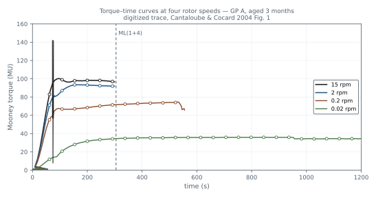
方法與第一個發現：把「ML(1+4) 對轉速」畫在雙對數座標上（原文 Fig. 2）——扭矩先隨轉速上升，到某個臨界轉速後斜率驟降、進入平緩支線。這個折點正是「正常流動→材料失效」的轉捩，與毛細管流變儀看到的熔體破裂特徵相同，而且不是儀器假象：折點對應的臨界剪應力約 0.19 MPa（GPA），跟大口徑毛細管流變儀量到的值一致；升溫會移動臨界轉速的位置，但折點的扭矩位準不隨溫度改變——是材料微結構的內在性質。[E2]
關鍵在折點的位置：GPA 臨界轉速 0.2 rpm、GPB 1.5 rpm——受測樣品的折點全在 2 rpm 以下，也就是標準 ML(1+4) 的讀值落在破裂支線上。老化（三個月）不改變臨界轉速，但讓整條曲線垂直上移。而且不止這兩支：不同產地生膠的掃描裡，連恒黏級的 TSR5CV 也在 2 rpm 以下出現折點——「標準轉速已在破裂區」不是單一樣品的特例。[E2]
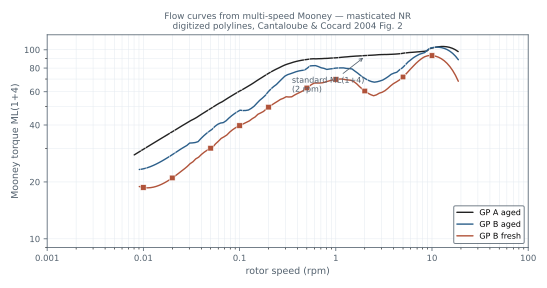
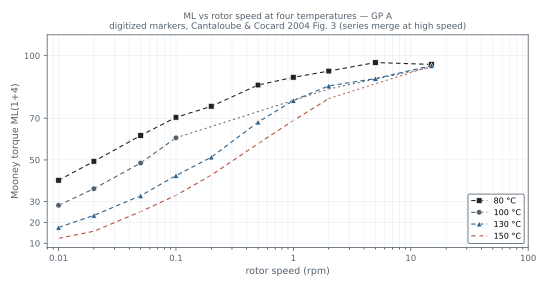
這同時解開了 Wallace 對不上的謎：2 rpm 的讀值只對微結構與老化敏感、對平均分子量不敏感——在破裂支線上，扭矩反映的是材料撕裂的臨界位準，不是流動阻力。把轉速降到 0.1 rpm，樣品排序立刻跟 Wallace P0 一致（原文 Fig. 5）。原因也乾淨：Wallace 可塑度計的等效剪切率不到 0.1 s⁻¹，本來就在破裂臨界以下——兩種量測在低速端量的是同一種材料狀態，在 2 rpm 量的卻是另一種。[E2]
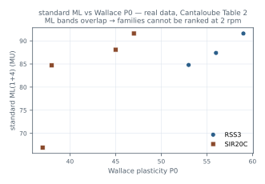
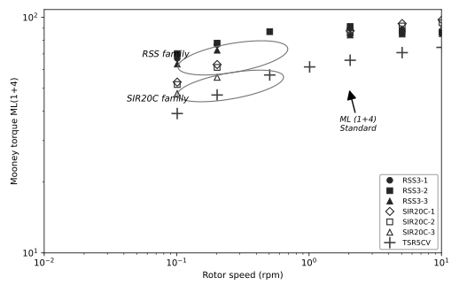
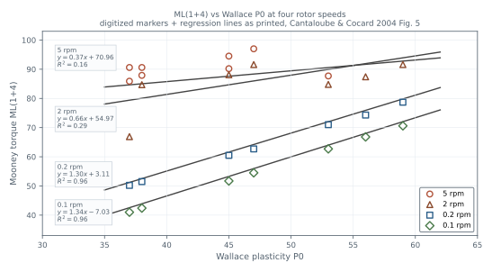
| 樣品 | Wallace P0 | PRI | ML(1+4) |
|---|---|---|---|
| 生膠 1 | 56 | 80 | 87.4 |
| 生膠 2 | 59 | 78 | 91.6 |
| 生膠 3 | 53 | 89 | 84.8 |
| 生膠 4 | 47 | 57 | 91.6 |
| 生膠 5 | 45 | 62 | 88.1 |
| 生膠 6 | 38 | 68 | 84.7 |
| 生膠 7 | 37 | 81 | 66.9 |
原文 Table 2 原值：不同產地生膠（RSS、TSR、TSR5CV 類）的 Wallace 塑性值 P0、可塑性保持指數 PRI 與標準 ML(1+4)。注意 P0 從 59 降到 37，ML 卻在 67–92 之間無序跳動——「對不上」不是誤差，是 2 rpm 讀值本身失真。[E2]
兩個「上限」要分開：打滑（slippage）是儀器層的上限——膠在轉子下滑動、扭矩讀不進去，鋸齒模面就是為了壓它；熔體破裂是材料層的上限——膠還咬著轉子，但膠本身撕裂了。機制不同，結果一樣：2 rpm 的讀值失真。作者建議 NR 的木尼量測改在 ≤0.2 rpm 進行。[E2]
範圍要說清楚：這個結論建立在天然膠上（含老化與不同產地）——合成膠、配方膠的臨界轉速各不相同，不能直接套用 0.2 rpm；而且破裂支線上的讀值並非「錯誤數據」，它對微結構與老化仍然敏感，只是量的不再是「流動粘度」這個量。[E2]
本篇文獻：Cantaloube & Cocard 2004 [E2]——原文 Fig. 1–5 全為數位化描取的忠實重繪，Table 1/Table 2 數據表照原值轉載；低速端量測的後續發展見 Kim et al. [E3]（〈變速木尼〉篇）。
—— 本篇完 ↑ 回到深入專案討論導讀
The standard specifies 2 rpm — can you still measure wrong by following it?
If the rubber is tearing rather than flowing inside the cavity, is the torque still viscosity?
Why has Mooney viscosity never correlated with Wallace plasticity for NR?
This paper comes from Michelin's Ladoux technical center, motivated by an old industry problem: NR Mooney values never lined up with Wallace plasticity (P0) — two instruments both claiming to measure "how stiff the rubber is," yet ranking samples differently. Cantaloube and Cocard modified a Mooney viscometer for variable speed (0.01–15 rpm) and scanned each rubber across the whole speed range to see where the reading starts to distort. The samples were GPA (RSS3-type) and GPB (TSR20-type), each fresh and aged three months, plus raw rubbers of different origins (RSS, TSR, TSR5CV) to check generality.[E2]
| Sample | Base rubber | ML fresh (1 day) | ML aged (3 months) |
|---|---|---|---|
| GP A | RSS3-type | 76 | 92 |
| GP B | TSR20-type | 72 | 91 |
Original Table 1 values: fresh and three-month-aged ML(1+4) for the two masticated rubbers — aging lifts ML by 16–19 units, the source of the "vertical shift" seen on the flow curves below.[E2]
First, what "melt fracture" means. When a polymer melt is sheared past a critical stress, flow turns from smooth to failure — the surface goes from glossy to rough, and slip and tearing appear inside; the "sharkskin" that plagues extrusion is the same family of phenomenon. The point: inside the fracture zone, torque reports the critical level at which the material tears, not flow resistance — the instrument still returns a number, but what the number means has changed.
Method and first finding: plotting ML(1+4) against rotor speed on double-log axes (the paper's Fig. 2) — torque first rises with speed, then the slope breaks sharply at a critical speed into a flatter branch. That break is the transition from proper flow to material failure, the same melt-fracture signature seen in capillary rheometry — and not an instrument artifact: the critical shear stress at the break is about 0.19 MPa (GPA), matching capillary-rheometer values with a large-diameter die; raising the temperature shifts where the break sits, but the torque level at the break does not move — an intrinsic property of the material's microstructure.[E2]
What matters is where the break sits: 0.2 rpm for GPA and 1.5 rpm for GPB — every sample tested broke below 2 rpm, meaning the standard ML(1+4) reading lands on the fracture branch. Aging (three months) does not move the critical speed but shifts the whole curve vertically upward. And it is not just these two: in scans of raw rubbers from different origins, even the viscosity-stabilized TSR5CV shows a break below 2 rpm — "the standard speed already sits in the fracture zone" is not a single-sample exception.[E2]
This also resolves the Wallace puzzle: the 2 rpm reading responds to microstructure and aging but not to average molecular weight — on the fracture branch, torque reflects the critical level at which the material tears, not flow resistance. Drop the speed to 0.1 rpm and the sample ranking immediately matches the Wallace P0 ranking (the paper's Fig. 5). The reason is clean: the Wallace plastimeter's equivalent shear rate is below 0.1 s⁻¹ — already under the fracture threshold. The two measurements see the same material state at low speed; at 2 rpm they see a different one.[E2]
| Sample | Wallace P0 | PRI | ML(1+4) |
|---|---|---|---|
| Raw 1 | 56 | 80 | 87.4 |
| Raw 2 | 59 | 78 | 91.6 |
| Raw 3 | 53 | 89 | 84.8 |
| Raw 4 | 47 | 57 | 91.6 |
| Raw 5 | 45 | 62 | 88.1 |
| Raw 6 | 38 | 68 | 84.7 |
| Raw 7 | 37 | 81 | 66.9 |
Original Table 2 values: Wallace plasticity P0, plasticity retention index PRI, and standard ML(1+4) for raw rubbers of different origins (RSS, TSR, TSR5CV types). Note that P0 falls from 59 to 37 while ML jumps around inside 67–92 — the mismatch is not noise; the 2 rpm reading itself is distorted.[E2]
Keep two "ceilings" apart: slippage is an instrument-level limit — the rubber slides under the rotor and torque cannot be read into it, which is what the serrated dies are for; melt fracture is a material-level limit — the rubber still grips the rotor, but the rubber itself tears. Different mechanisms, same outcome: the 2 rpm reading distorts. The authors recommend measuring NR at rotor speeds not greater than 0.2 rpm.[E2]
Scope deserves honesty: the conclusion was established on natural rubber (aged and of different origins) — critical speeds differ for synthetics and compounds, so 0.2 rpm cannot be transplanted as a universal number; and a reading on the fracture branch is not "wrong data" — it still responds to microstructure and aging, it just no longer measures "flow viscosity."[E2]
Sources: Cantaloube & Cocard 2004 [E2] — Figs. 1–5 are all faithful digitized redraws, Tables 1–2 transcribed with original values; the low-speed measurement development continues in Kim et al. [E3] (see the variable-speed piece).
同一批膠、不同轉速量出不同 VR——哪一個才代表材料本身？
為什麼高速端對應 Mn、低速端對應 Mw？
VR2 合格的膠，怎麼還會被低速端挑出來？
〈熔體破裂〉證明了 2 rpm 對 NR 可能在破裂區——自然的下一問是：各個轉速分別看到什麼？CIRAD 的 Kim、Bonfils 團隊用可變速木尼儀 MV3000V（0.02–5 rpm）正面回答，而且他們的樣品設計很關鍵：單一無性系（GT1、PB217、PB235、RRIC101）、兩品系混摻、塑解劑處理（Struktol LP150）與工業 TSR5CV60——每個樣品的分子量分布都由 SEC-MALS 逐一標定，所以能把「哪個轉速看到什麼」直接對上分子結構，不是猜的。[E3]
樣品設計分成三族，剛好對應三種結構情境：單一無性系與兩品系混摻提供「高 Mw／寬分布」端——兩條單峰疊加成更寬的雙峰分布；塑解劑處理提供「長鏈被剪斷」端——化學塑解優先切最長的那批鏈，Mw 明顯下降而 Mn 相對撐住；工業 TSR5CV60 則是「規格上長得一樣、結構未必一樣」的真實世界端。三族擺在一起，「哪個轉速對哪段結構敏感」才驗證得起來。[E3]
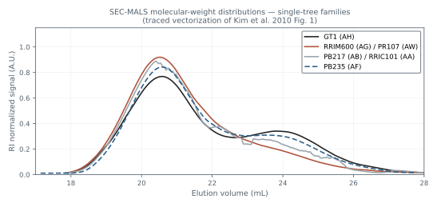
| 轉速 | 等效剪切率 | 等效頻率 | 主要看到什麼 |
|---|---|---|---|
| 0.05 rpm | 0.039 s⁻¹ | 0.18 Hz | Mw——最長鏈扛扭矩的區段 |
| 0.2 rpm | 0.157 s⁻¹ | 0.6 Hz | 過渡區 |
| 2 rpm | 1.571 s⁻¹ | 5.9 Hz | Mn——短鏈與失效臨界主導 |
轉速與剪切率、頻率的對應關係如上（原文 Table 2；剪切率由轉子幾何換算，等效頻率用來跟動態力學 G* 對照）。[E3]
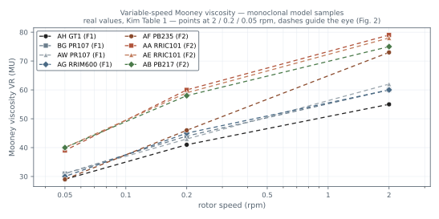
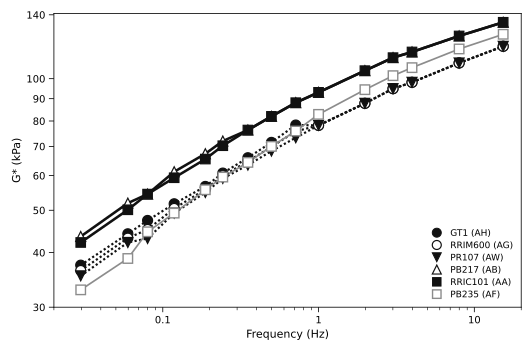
相關性的分工很清楚：VR2 與數均分子量 Mn 相關最好（R² = 0.851），比它與 √(Mn·Mw) 的相關（0.745）還高；但降到 0.05 rpm，VR–Mn 相關只剩 0.575。反過來，VR0.05 與重均分子量 Mw 高度相關（R² = 0.931，VR0.05 = 0.022·Mw + 0.312），把 Mw 乘上分散度倒數平方根 Ip−1/2 修正後更強（VR0.05 = 0.05·Mw·Ip−1/2 + 12.24，R² = 0.953）。換算成剪切粘度也同向：η0.02 ∝ Mw1.05、η0.05 ∝ Mw0.91、η0.2 ∝ Mw0.55——分子量敏感度隨轉速下降而升高。動態力學 G* 的對照也吻合：G*(8 Hz) 與 VR2 相關最好（R² = 0.895）、G*(0.12 Hz) 與 VR0.05 相關最好（R² = 0.953）——頻率域與轉速域互相印證。[E3]
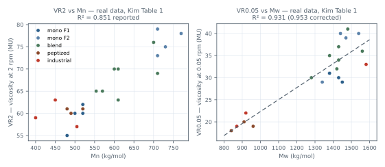
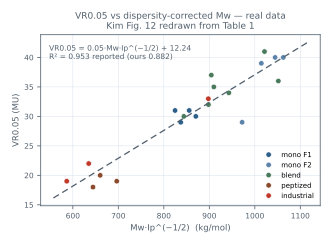
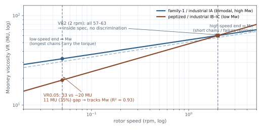
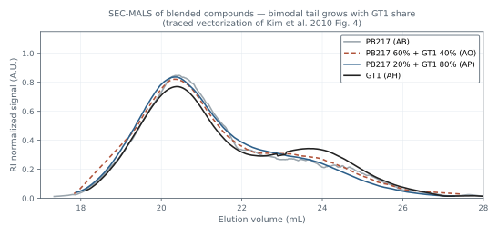
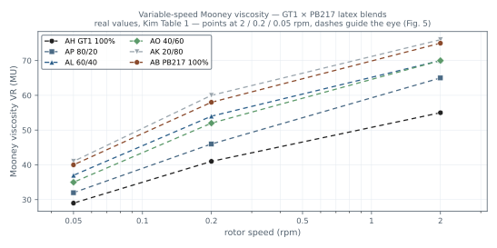
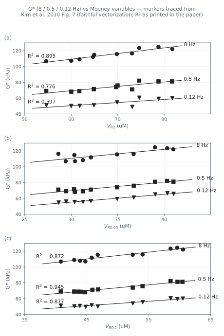
最有說服力的是工業樣品案：三個 TSR5CV60（IA、IB、IC）VR2 分別 57、63、59——全在 60±5 合格帶內、幾乎無法區分。但 SEC-MALS 顯示 IA 是雙峰分布（像 family 1 模型膠，Mw 1581 kg/mol），IB/IC 卻是近單峰、Mw 只有 920/870、Mz 也低——結構其實像塑解膠。低速端立刻現形：VR0.05 分別 33、22、19——IB/IC 比 IA 低三成多。對照組更乾淨：塑解處理的樣品 VR2 跟未塑解的一樣（60/61），VR0.05 卻掉到 18–20——塑解劑剪斷的是最長的那批鏈（Mw 降 38%），VR2 完全看不見，VR0.05 一看一個準。[E3]
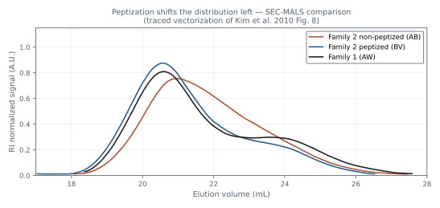
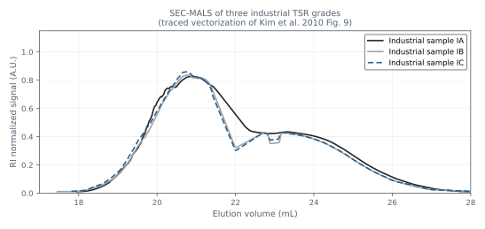
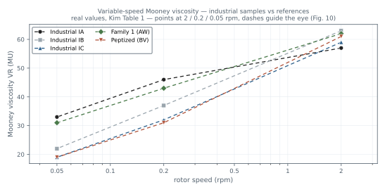
為什麼高低速端看到不同東西？接回〈熔體破裂〉的圖像：高速端材料已進入失效／解纏區，響應被短鏈含量與破裂臨界主導——對 Mn（鏈的數量）敏感；低速端材料還在正常流動區，扭矩主要由最長的那批鏈扛——對 Mw（權重偏長鏈的平均）敏感。作者引 Wang 的理論補充機制：應力過衝後的劇烈解纏與斷鏈造成不均勻流動，而過衝在 <0.2 rpm 消失——正好接上 Cantaloube 的臨界轉速。[E3][E2]
| 族 | 樣品 | Mn | Mw | VR2 | VR0.2 | VR0.05 |
|---|---|---|---|---|---|---|
| 單株 F1 | 5CV60-1 | 480 | 1450 | 55 | 41 | 29 |
| 5CV60-2 | 500 | 1380 | 60 | 44 | 31 | |
| 5CV60-3 | 520 | 1380 | 62 | 43 | 31 | |
| 5CV60-4 | 520 | 1430 | 60 | 45 | 30 | |
| 單株 F2 | 5CV-1 | 710 | 1340 | 73 | 46 | 29 |
| 5CV-2 | 710 | 1470 | 79 | 60 | 39 | |
| 5CV-3 | 770 | 1440 | 78 | 59 | 40 | |
| 5CV-4 | 730 | 1540 | 75 | 58 | 40 | |
| 混摻 | PB217 20% | 570 | 1420 | 65 | 46 | 32 |
| PB217 40% | 610 | 1430 | 70 | 54 | 37 | |
| PB217 60% | 600 | 1380 | 70 | 52 | 35 | |
| PB217 80% | 700 | 1480 | 76 | 60 | 41 | |
| RRIC101 20% | 610 | 1430 | 63 | 47 | 34 | |
| RRIC101 80% | 710 | 1560 | 69 | 55 | 36 | |
| PB235 60% | 554 | 1280 | 65 | 47 | 30 | |
| 塑解 | P-1 | 480 | 910 | 61 | 33 | 20 |
| P-2 | 520 | 960 | 61 | 31 | 19 | |
| P-3 | 490 | 840 | 60 | 29 | 18 | |
| 工業 | IA | 505 | 1581 | 57 | 46 | 33 |
| IB | 450 | 920 | 63 | 37 | 22 | |
| IC | 400 | 870 | 59 | 32 | 19 |
原文 Table 1 原值（Mn、Mw 單位 kg/mol；VR 單位 MU）。對照看：塑解族 VR2 與單株族同階（60–61），VR0.05 卻只剩 18–20；工業 IB/IC 的 Mn、Mw 都接近塑解族——規格相同的膠，低速端把結構差異攤開。[E3]
實務與邊界：建議做法是雙點法——同時記錄 VR2 與 VR0.05：VR2 守規格門、VR0.05 專門攔「規格合格但長鏈已被破壞」的樣品。為什麼選 0.05 不再更低？因為再低的轉速要等更久才到平穩值，測試時間失去實務性。邊界也要說：這些相關性建立在天然膠模型膠與工業 NR 上，不同膠種的流動區間與失效臨界不同，不能直接搬公式；VR 讀的是「對結構敏感的指標」，不是分子量本身。[E3]
本篇文獻：Kim et al. 2010 [E3]——Fig. 1/4/8/9（SEC-MALS 色譜）為數位化描取的忠實重繪，Fig. 2/5/10 由 Table 1 原值重繪，Fig. 7 為逐點描取的忠實重繪（R² 照原文標示），Fig. 3 為逐站位描取頻帶與標記群的忠實重繪（疊合標記依原樣呈現），Fig. 6/11 由 VR–Mn/Mw 實測散點圖涵蓋、Fig. 12 由 Mw·Ip−1/2 修正圖涵蓋（皆 Table 1 原值重繪），Table 1/Table 2 照原值轉載；熔體破裂背景見 Cantaloube & Cocard [E2]（〈熔體破裂〉篇）。
—— 本篇完 ↑ 回到深入專案討論導讀
The same rubber gives different VR at different rotor speeds — which one represents the material?
Why does the high-speed end correspond to Mn while the low-speed end corresponds to Mw?
How can a VR2-passing rubber still get caught?
The melt-fracture piece showed that 2 rpm can be inside the fracture zone for NR — the natural next question is what each speed actually sees. The CIRAD team of Kim and Bonfils answered directly with a variable-speed MV3000V (0.02–5 rpm), and their sample design is what makes the answer solid: monoclonal rubbers (GT1, PB217, PB235, RRIC101), two-clone blends, peptized samples (Struktol LP150), and industrial TSR5CV60 — every sample's molecular-weight distribution characterized by SEC-MALS, so they could map which speed sees which structure instead of guessing.[E3]
The sample design falls into three families, one per structural scenario: monoclonal rubbers and two-clone blends supply the high-Mw / broad-distribution end — two unimodal peaks stacked into a wider, bimodal one; peptized samples supply the "long chains cut" end — chemical peptization preferentially severs the longest chains, so Mw drops markedly while Mn largely holds; and industrial TSR5CV60 supplies the real-world end — identical on spec, not necessarily identical in structure. Only with all three families side by side can "which speed is sensitive to which structure" actually be verified.[E3]
| Rotor speed | Equiv. shear rate | Equiv. frequency | What it mainly sees |
|---|---|---|---|
| 0.05 rpm | 0.039 s⁻¹ | 0.18 Hz | Mw — where the longest chains carry the torque |
| 0.2 rpm | 0.157 s⁻¹ | 0.6 Hz | Transition zone |
| 2 rpm | 1.571 s⁻¹ | 5.9 Hz | Mn — dominated by short chains and the failure threshold |
The speed–shear-rate–frequency correspondence is shown above (the paper's Table 2; shear rate from rotor geometry, equivalent frequency for comparison with dynamic-mechanical G*).[E3]
The division of labor is clear: VR2 correlates best with number-average molar mass Mn (R² = 0.851) — better even than with √(Mn·Mw) (0.745); but at 0.05 rpm the VR–Mn correlation drops to 0.575. Conversely, VR0.05 correlates strongly with weight-average Mw (R² = 0.931, VR0.05 = 0.022·Mw + 0.312), stronger still after correcting Mw by the inverse square root of dispersity (VR0.05 = 0.05·Mw·Ip−1/2 + 12.24, R² = 0.953). Converted shear viscosities point the same way: η0.02 ∝ Mw1.05, η0.05 ∝ Mw0.91, η0.2 ∝ Mw0.55 — molecular-weight sensitivity rises as speed falls. Dynamic-mechanical G* agrees: G*(8 Hz) correlates best with VR2 (R² = 0.895), G*(0.12 Hz) best with VR0.05 (R² = 0.953) — frequency domain and speed domain confirm each other.[E3]
The most convincing evidence is the industrial-sample case: three TSR5CV60 (IA, IB, IC) read VR2 of 57, 63, 59 — all inside the 60±5 spec, nearly indistinguishable. Yet SEC-MALS shows IA is bimodal (like the family-1 model rubbers, Mw 1581 kg/mol) while IB/IC are quasi-unimodal with Mw only 920/870 and lower Mz — structurally closer to peptized rubber. The low-speed end exposes it immediately: VR0.05 of 33, 22, 19 — IB/IC more than 30% below IA. The control is cleaner still: peptized samples have the same VR2 as unpeptized ones (60/61), but VR0.05 collapses to 18–20 — the peptizer cuts the longest chains (Mw down 38%), invisible to VR2, obvious to VR0.05.[E3]
Why do the two ends see different things? Connecting back to the melt-fracture picture: at the high-speed end the material is already in the failure/disentanglement regime, the response dominated by short-chain content and the fracture threshold — sensitive to Mn (the number of chains); at the low-speed end the material is still in proper flow, the torque carried mainly by the longest chains — sensitive to Mw (the average weighted toward long chains). The authors cite Wang's theory for the mechanism: severe disentanglement and chain fracture after the stress overshoot cause inhomogeneous flow, and the overshoot disappears below 0.2 rpm — exactly Cantaloube's critical speed.[E3][E2]
| Family | Sample | Mn | Mw | VR2 | VR0.2 | VR0.05 |
|---|---|---|---|---|---|---|
| mono F1 | 5CV60-1 | 480 | 1450 | 55 | 41 | 29 |
| 5CV60-2 | 500 | 1380 | 60 | 44 | 31 | |
| 5CV60-3 | 520 | 1380 | 62 | 43 | 31 | |
| 5CV60-4 | 520 | 1430 | 60 | 45 | 30 | |
| mono F2 | 5CV-1 | 710 | 1340 | 73 | 46 | 29 |
| 5CV-2 | 710 | 1470 | 79 | 60 | 39 | |
| 5CV-3 | 770 | 1440 | 78 | 59 | 40 | |
| 5CV-4 | 730 | 1540 | 75 | 58 | 40 | |
| blends | PB217 20% | 570 | 1420 | 65 | 46 | 32 |
| PB217 40% | 610 | 1430 | 70 | 54 | 37 | |
| PB217 60% | 600 | 1380 | 70 | 52 | 35 | |
| PB217 80% | 700 | 1480 | 76 | 60 | 41 | |
| RRIC101 20% | 610 | 1430 | 63 | 47 | 34 | |
| RRIC101 80% | 710 | 1560 | 69 | 55 | 36 | |
| PB235 60% | 554 | 1280 | 65 | 47 | 30 | |
| peptized | P-1 | 480 | 910 | 61 | 33 | 20 |
| P-2 | 520 | 960 | 61 | 31 | 19 | |
| P-3 | 490 | 840 | 60 | 29 | 18 | |
| industrial | IA | 505 | 1581 | 57 | 46 | 33 |
| IB | 450 | 920 | 63 | 37 | 22 | |
| IC | 400 | 870 | 59 | 32 | 19 |
Original Table 1 values (Mn, Mw in kg/mol; VR in MU). For contrast: the peptized family's VR2 sits in the same band as the monoclonals (60–61) while VR0.05 collapses to 18–20; industrial IB/IC have Mn and Mw close to the peptized family — the low-speed end lays bare the structural differences inside same-spec rubber.[E3]
Practice and boundaries: the recommended protocol is two-point — record both VR2 and VR0.05: VR2 guards the spec gate, VR0.05 catches samples that pass spec but have lost their long chains. Why 0.05 and not lower? Below that, reaching the plateau takes longer and the test loses practicality. The boundaries also deserve statement: these correlations were built on NR model rubbers and industrial NR — other rubber families have different flow regimes and failure thresholds, so the equations do not transplant directly; VR reads a structure-sensitive index, not molecular weight itself.[E3]
Sources: Kim et al. 2010 [E3] — Figs. 1/4/8/9 (SEC-MALS chromatograms) are faithful digitized redraws; Figs. 2/5/10 are redrawn from Table 1 values; Fig. 7 is a faithful point-by-point digitized redraw (R² as printed); Fig. 3 is a faithful redraw with bands and marker groups digitized station-by-station (overlapping markers rendered as in the original); Figs. 6/11 covered by the VR–Mn/Mw measured scatter and Fig. 12 by the Mw·Ip−1/2 correction plot (both redrawn from Table 1 values); Tables 1–2 transcribed with original values; melt-fracture background in Cantaloube & Cocard [E2] (see the melt-fracture piece).
M = k·ta 不是唯一選項——換個模型，會不會擬合得更準？
食品科學的番茄硬度模型，為什麼會出現在橡膠裡？
擬合得再漂亮，參數對不上材料結構有用嗎？
前文用的冪次定律是 ASTM 框架的標配，但「標配」不等於「最好」。Ehabe 等人（同樣是 CIRAD 團隊）把同一批鬆弛數據用四種模型比擬合優度：14 個樣品（12 個天然膠——GT1、PB217、PR107 三品系的 TSR3CV 與 TSR10，加 IR305、Natsyn 兩個合成聚異戊二烯），ISO 289 條件、500 秒鬆弛窗，每個樣品三次重複。四個候選的選擇也有脈絡：冪次定律是現任標配、廣義 Maxwell 是黏彈性的物理基礎模型、拉伸指數是玻璃態鬆弛的常用形狀、Wu–Abbott 則是參數帶物理解讀的經驗式——等於物理派與經驗派的同場比試。[E4]
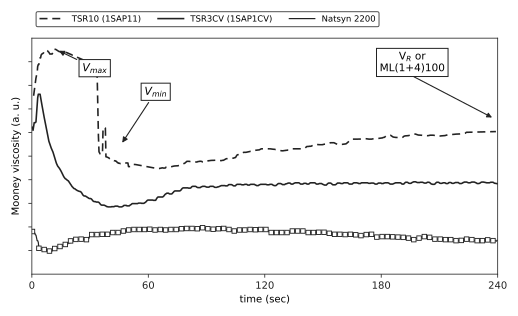
| 樣品 | 品系 | 品級 | 熟成（天） | ML(1+4) | tm (s) | 總凝膠 % |
|---|---|---|---|---|---|---|
| IR305 | — | 合成 PI | — | 76 | 163 | 8 |
| Natsyn | — | 合成 PI | — | 85 | 198 | 25 |
| 1SAP1-CV | GT1 | TSR3CV | — | 66 | 185 | 40 |
| 1SAP2-CV | PR107 | TSR3CV | — | 54 | 196 | 39 |
| 1SAP3-CV | PB217 | TSR3CV | — | 85 | 204 | 44 |
| 1SAP1-1 | GT1 | TSR10 | 1 | 96 | 259 | 65 |
| 1SAP2-1 | PR107 | TSR10 | 1 | 91 | 271 | 65 |
| 1SAP3-1 | PB217 | TSR10 | 1 | 98 | 253 | 58 |
| 1SAP1-4 | GT1 | TSR10 | 4 | 104 | 290 | 67 |
| 1SAP2-4 | PR107 | TSR10 | 4 | 99 | 277 | 69 |
| 1SAP3-4 | PB217 | TSR10 | 4 | 95 | 249 | 59 |
| 1SAP1-21 | GT1 | TSR10 | 21 | 101 | 261 | 66 |
| 1SAP2-21 | PR107 | TSR10 | 21 | 100 | 297 | 70 |
| 1SAP3-21 | PB217 | TSR10 | 21 | 97 | 264 | 61 |
原文 Table 1 原值（節錄品系、品級、熟成天數、ML、Maxwell 總鬆弛時間 tm、總凝膠六欄；全表另有 Wu–Abbott 參數 a/b 與宏觀/微觀凝膠細項）。樣品設計的關鍵在右兩欄：熟成天數把凝膠含量從 8% 拉到 70%，tm–凝膠關係（Fig. 8）才有得看。[E4]
| 模型 | 方程式 | 背景與參數意義 |
|---|---|---|
| 冪次定律 | M = k·ta | ASTM D1646 標配；a 為鬆弛速率指數 |
| 拉伸指數（KWW） | M = exp(−(t/τ)β) | 玻璃態鬆弛常用；β 與鬆弛時間分布寬度成反比 |
| 廣義 Maxwell（三指數） | MLN(t) = a + b·e−t/c + d·e−t/f + g·e−t/h | 黏彈性基礎模型：a 為殘餘扭矩（t→∞），c/f/h 為三個鬆弛時間 ti = ηi/Gi |
| Wu–Abbott | Y = 1 − a·ln(1+t) − b·t/(c+t) | 食品科學經驗式（原描述番茄果肉貯藏硬度鬆弛）；a 正比於彈性成分、b 正比於黏性成分 |
排名乾淨俐落（原文 Table 2）：廣義 Maxwell 三指數模型在 14 個樣品上每個都拿第一（平均排名 1.0、平均 R² ≈ 0.999、殘差隨機分布）；Wu–Abbott 第二（2.2、R² ≈ 0.996）；冪次定律第三（3.3、R² ≈ 0.968）且殘差呈系統性分布——不是雜訊，是模型形狀本身就套不準；拉伸指數墊底（3.7、R² ≈ 0.962）。所以後續研究只保留 Maxwell 與 Wu–Abbott 兩個模型做參數穩健性評估。[E4]
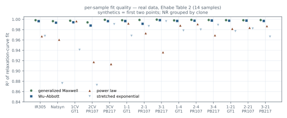
| 樣品 | 品系 | Maxwell | Wu–Abbott | 冪次定律 | 拉伸指數 |
|---|---|---|---|---|---|
| IR305 | 合成 | 0.9984 | 0.9965 | 0.9672 | 0.9676 |
| Natsyn | 合成 | 0.9965 | 0.9935 | 0.9606 | 0.8761 |
| 1SAP1CV | GT1 | 0.9974 | 0.9943 | 0.9965 | 0.9409 |
| 1SAP2CV | PR107 | 0.9941 | 0.9880 | 0.9174 | 0.8727 |
| 1SAP3CV | PB217 | 0.9991 | 0.9965 | 0.9134 | 0.9906 |
| 1SAP11 | GT1 | 0.9983 | 0.9967 | 0.9922 | 0.9681 |
| 1SAP21 | PR107 | 0.9988 | 0.9914 | 0.9731 | 0.9867 |
| 1SAP31 | PB217 | 0.9995 | 0.9984 | 0.9362 | 0.9962 |
| 1SAP14 | GT1 | 0.9979 | 0.9969 | 0.9882 | 0.9782 |
| 1SAP24 | PR107 | 0.9990 | 0.9974 | 0.9907 | 0.9800 |
| 1SAP34 | PB217 | 0.9987 | 0.9977 | 0.9691 | 0.9890 |
| 1SAP121 | GT1 | 0.9985 | 0.9974 | 0.9818 | 0.9769 |
| 1SAP221 | PR107 | 0.9983 | 0.9976 | 0.9838 | 0.9821 |
| 1SAP321 | PB217 | 0.9986 | 0.9969 | 0.9869 | 0.9664 |
| 平均 R²／平均排名 | 0.9981／1.0 | 0.9957／2.2 | 0.9684／3.3 | 0.9622／3.7 | |
原文 Table 2 原值：14 個樣品四模型的決定係數 R²（擬合 500 秒鬆弛段、三次重複）。末列為各模型的平均 R² 與平均排名（1 = 最佳）——Maxwell 在 14 個樣品上全部排名第一。[E4]
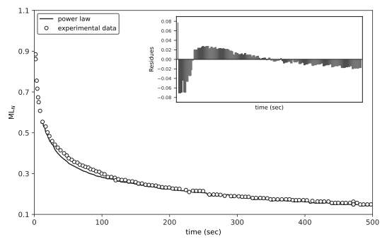
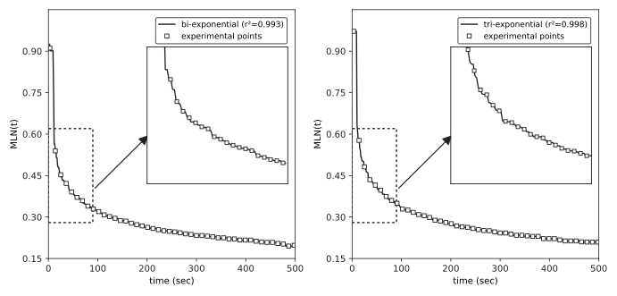
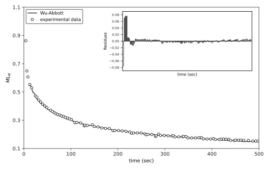
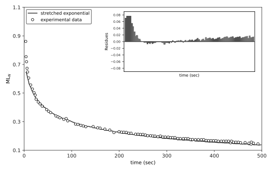
Wu–Abbott 的跨域借用值得多看一眼：它原本用來描述番茄果肉貯藏時的硬度鬆弛——搬到橡膠還成立，是因為鬆弛曲線的形狀本身是通用特徵。而且參數有物理解讀：a 正比於彈性成分、b 正比於黏性成分、c 描述初期鬆弛速率——實測 a 與 b 呈負相關（原文 Fig. 7），與模型假設一致。[E4]
但擬合好只是入場券——作者把參數回接分子結構才算得分：Maxwell 的總鬆弛時間 tm = Σti 與總凝膠含量（宏觀凝膠＋微觀凝膠）相關（原文 Fig. 8）——單獨看其中一種凝膠反而無相關；與平均分子量則找不到可靠關係，顯示鬆弛行為受凝膠影響大於分子量。[E4]
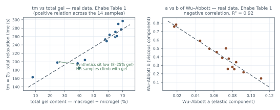
重現性也要老實說：ML 本身的重複性 CV 不到 1%，但鬆弛參數的 CV 落在 3.7–11.5%——比 ML 糙一截。實務含義：這些參數當「趨勢指標」用比當「絕對值」用穩。[E4]
| 參數 | 來源模型 | 平均 CV | 備註 |
|---|---|---|---|
| ML(1+4) | —（粘度本體） | 0.8% | 重複性極佳，14 樣品最高 2.1% |
| tm = Σti | 廣義 Maxwell | 8.0% | 總鬆弛時間；樣品間 1.6–23.9% |
| MLN(t) | 廣義 Maxwell | 7.2% | 歸一化鬆弛扭矩；樣品間 1.0–14.4% |
| a（彈性成分） | Wu–Abbott | 8.7% | 兩個合成膠樣品最差（17–21%），NR 較穩 |
| b（黏性成分） | Wu–Abbott | 11.5% | 最糙的一項，NR 樣品亦有離群值（17–48%） |
原文 Table 3：各參數的變異係數 CV（每樣品三次重複的平均）。粘度讀值本身很穩，鬆弛模型參數整整糙一個數量級——這是「當趨勢指標用」的直接依據。[E4]
跟前文的關係要說清楚：前文用冪次定律，是因為 ASTM 的判讀體系與 Maláč 的 (a+1) 都建立在其上——單一參數、跨廠可比、接得上標準；Ehabe 顯示冪次定律在四個模型裡擬合度倒數、指數 a 也對不上具體結構量。兩者不矛盾，是分工不同：要跨廠比對、接標準，用冪次指數；要從鬆弛曲線挖結構情報，Maxwell 的 tm 能挖到凝膠含量這一層。[E4]
本篇文獻：Ehabe et al. 2005 [E4]——Fig. 1–6 為自原圖描線的忠實重繪、Fig. 7/8 由 Table 1/2 原值重繪涵蓋，Table 1/2/3 照原值轉載；冪次框架見 ASTM D1646 [E5] 與〈彈性指數〉篇 [E1]。
—— 本篇完 ↑ 回到深入專案討論導讀
M = k·ta is not the only option — would another model fit better?
Why does a tomato-firmness model from food science show up in rubber?
If a fit is beautiful but its parameters map to nothing structural, is it useful?
The power law used earlier in the main text is the ASTM framework default — but "default" is not "best." Ehabe and co-workers (the same CIRAD team) ran one shared relaxation dataset through four models and ranked them by goodness of fit: 14 samples (12 natural rubbers — TSR3CV and TSR10 of the GT1, PB217, and PR107 clones — plus two synthetic polyisoprenes IR305 and Natsyn), ISO 289 conditions, a 500-second relaxation window, three replicates per sample. The four candidates were chosen with a rationale: the power law is the incumbent standard, the generalized Maxwell is the physical baseline of viscoelasticity, the stretched exponential is the usual shape for glassy-state relaxation, and Wu–Abbott is an empirical form whose parameters carry physical readings — a head-to-head of physics-based and empirical schools.[E4]
| Sample | Clone | Grade | Maturation (days) | ML(1+4) | tm (s) | Total gel % |
|---|---|---|---|---|---|---|
| IR305 | — | synthetic PI | — | 76 | 163 | 8 |
| Natsyn | — | synthetic PI | — | 85 | 198 | 25 |
| 1SAP1-CV | GT1 | TSR3CV | — | 66 | 185 | 40 |
| 1SAP2-CV | PR107 | TSR3CV | — | 54 | 196 | 39 |
| 1SAP3-CV | PB217 | TSR3CV | — | 85 | 204 | 44 |
| 1SAP1-1 | GT1 | TSR10 | 1 | 96 | 259 | 65 |
| 1SAP2-1 | PR107 | TSR10 | 1 | 91 | 271 | 65 |
| 1SAP3-1 | PB217 | TSR10 | 1 | 98 | 253 | 58 |
| 1SAP1-4 | GT1 | TSR10 | 4 | 104 | 290 | 67 |
| 1SAP2-4 | PR107 | TSR10 | 4 | 99 | 277 | 69 |
| 1SAP3-4 | PB217 | TSR10 | 4 | 95 | 249 | 59 |
| 1SAP1-21 | GT1 | TSR10 | 21 | 101 | 261 | 66 |
| 1SAP2-21 | PR107 | TSR10 | 21 | 100 | 297 | 70 |
| 1SAP3-21 | PB217 | TSR10 | 21 | 97 | 264 | 61 |
Original Table 1 values (six columns excerpted: clone, grade, maturation days, ML, Maxwell total relaxation time tm, total gel; the full table also lists Wu–Abbott parameters a/b and macro-/microgel detail). The design point sits in the last two columns: maturation spreads gel content from 8% to 70% — that spread is what makes the tm–gel relation (Fig. 8) visible.[E4]
| Model | Equation | Background and parameter meaning |
|---|---|---|
| Power law | M = k·ta | ASTM D1646 default; a is the relaxation-rate exponent |
| Stretched exponential (KWW) | M = exp(−(t/τ)β) | Common in glassy-state relaxation; β inversely related to the width of the relaxation-time distribution |
| Generalized Maxwell (tri-exponential) | MLN(t) = a + b·e−t/c + d·e−t/f + g·e−t/h | Basic viscoelastic model: a is the residual torque (t→∞); c/f/h are three relaxation times ti = ηi/Gi |
| Wu–Abbott | Y = 1 − a·ln(1+t) − b·t/(c+t) | Food-science empirical form (originally for firmness relaxation of stored tomato flesh); a ∝ elastic component, b ∝ viscous component |
The ranking is unambiguous (the paper's Table 2): the tri-exponential Maxwell places first for every one of the 14 samples (mean rank 1.0, mean R² ≈ 0.999, residuals randomly distributed); Wu–Abbott comes second (2.2, R² ≈ 0.996); the power law third (3.3, R² ≈ 0.968) with systematically distributed residuals — not noise, but a shape the model intrinsically cannot capture; the stretched exponential finishes last (3.7, R² ≈ 0.962). Only the Maxwell and Wu–Abbott models were kept for the subsequent robustness assessment.[E4]
| Sample | Clone | Maxwell | Wu–Abbott | Power law | Stretched exp. |
|---|---|---|---|---|---|
| IR305 | synthetic | 0.9984 | 0.9965 | 0.9672 | 0.9676 |
| Natsyn | synthetic | 0.9965 | 0.9935 | 0.9606 | 0.8761 |
| 1SAP1CV | GT1 | 0.9974 | 0.9943 | 0.9965 | 0.9409 |
| 1SAP2CV | PR107 | 0.9941 | 0.9880 | 0.9174 | 0.8727 |
| 1SAP3CV | PB217 | 0.9991 | 0.9965 | 0.9134 | 0.9906 |
| 1SAP11 | GT1 | 0.9983 | 0.9967 | 0.9922 | 0.9681 |
| 1SAP21 | PR107 | 0.9988 | 0.9914 | 0.9731 | 0.9867 |
| 1SAP31 | PB217 | 0.9995 | 0.9984 | 0.9362 | 0.9962 |
| 1SAP14 | GT1 | 0.9979 | 0.9969 | 0.9882 | 0.9782 |
| 1SAP24 | PR107 | 0.9990 | 0.9974 | 0.9907 | 0.9800 |
| 1SAP34 | PB217 | 0.9987 | 0.9977 | 0.9691 | 0.9890 |
| 1SAP121 | GT1 | 0.9985 | 0.9974 | 0.9818 | 0.9769 |
| 1SAP221 | PR107 | 0.9983 | 0.9976 | 0.9838 | 0.9821 |
| 1SAP321 | PB217 | 0.9986 | 0.9969 | 0.9869 | 0.9664 |
| Mean R² / mean rank | 0.9981 / 1.0 | 0.9957 / 2.2 | 0.9684 / 3.3 | 0.9622 / 3.7 | |
Original Table 2 values: coefficient of determination R² for the four models on each of the 14 samples (500 s relaxation window, three replicates). The last row gives each model's mean R² and mean rank (1 = best) — Maxwell ranked first on all 14 samples.[E4]
The Wu–Abbott borrowing deserves a second look: it was originally written to describe firmness relaxation of stored tomato flesh — the cross-material borrowing works because the shape of a relaxation curve is a generic signature. And its parameters carry physical meaning: a is proportional to the elastic component, b to the viscous component, c describes the initial relaxation rate — the measured a and b are negatively correlated (the paper's Fig. 7), consistent with the model's assumption.[E4]
But a good fit is only the entry ticket — the authors wired the parameters back to structure: the Maxwell total relaxation time tm = Σti correlates with total gel content (macrogel + microgel) (the paper's Fig. 8) — while neither gel fraction alone correlates; no reliable relation with mean molar masses was found, showing relaxation responds to gel more than to molecular weight.[E4]
Repeatability deserves honesty too: the CV of ML itself is under 1%, but the relaxation parameters show CVs of 3.7–11.5% — considerably rougher. Practical reading: treat these parameters as trend indicators rather than absolute values.[E4]
| Parameter | Model | Mean CV | Note |
|---|---|---|---|
| ML(1+4) | — (viscosity itself) | 0.8% | Excellent repeatability; max 2.1% across samples |
| tm = Σti | Generalized Maxwell | 8.0% | Total relaxation time; 1.6–23.9% by sample |
| MLN(t) | Generalized Maxwell | 7.2% | Normalized relaxation torque; 1.0–14.4% |
| a (elastic) | Wu–Abbott | 8.7% | Worst on the two synthetics (17–21%); NR more stable |
| b (viscous) | Wu–Abbott | 11.5% | Roughest of all; NR samples also show outliers (17–48%) |
The paper's Table 3: coefficient of variation for each parameter (mean of three replicates per sample). The viscosity reading itself is stable, while the relaxation-model parameters are a full order of magnitude rougher — the direct basis for "use them as trend indicators."[E4]
The relation to the main text should be stated plainly: the power law was used because ASTM's reading framework and Maláč's (a+1) are built on it — a single comparable parameter that plugs into the standard; Ehabe shows the power law is among the weakest of the four fits, and its exponent a maps to no specific structural quantity. There is no contradiction, only a division of labor: for cross-plant comparison and standard compliance, use the power-law index; for mining structural information out of the relaxation curve, Maxwell's tm reaches the gel-content layer.[E4]
Sources: Ehabe et al. 2005 [E4] — Figs. 1–6 are faithful redraws traced from the originals; Figs. 7/8 are covered by a redraw from Table 1/2 values; Tables 1–3 transcribed with original values; the power-law framework in ASTM D1646 [E5] and the elasticity-index piece [E1].
深入專案討論 延伸文獻
Deep-Dive References